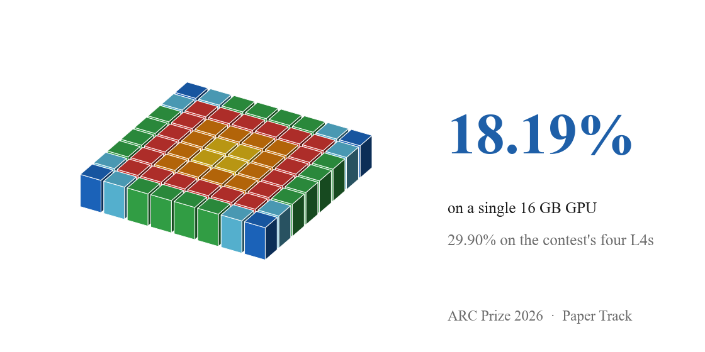
We run the 2025 ARC Prize winning recipe, a small grid model with per-task test-time training (TTT) and augment-infer-reverse-vote (AIRV) selection, on a single 16 GB consumer GPU, and ask what actually binds at that scale. The binding constraint is generation throughput, not model quality and not memory. Moving decode off the Hugging Face eager path onto llama.cpp buys a 13× speedup, turns an overnight failure-prone evaluation into a sub-90-minute one, and is what makes per-task TTT tractable at all, by hot-swapping each task's adapter on the fast engine. Building on the NVARC Qwen3-4B grid model, the system scores 12.79% without TTT on the 120-task public evaluation set. The lift from TTT depends on regularization. A naive adapter overfits and ties the baseline, while a regularized, scale-tuned configuration reaches 17.6% on the 84 trainable tasks and lifts the full evaluation to a blended 16.28%. On the hidden main-track leaderboard the same recipe scores 13.61% with TTT and 6.53% without, and the public-to-hidden transfer is itself a finding. The no-TTT baseline halves, and across the follow-on submissions every candidate-side lever that lifted or tied the public evaluation regressed the hidden score, so public-eval gains must be re-validated in the exact deployed condition before they are trusted. The climb then came from the training side rather than the vote. Deepening the regularized adapter lifted the hidden score to 18.19%, a 4.58-point gain and the first configuration to beat the shipped operating point. The number is not a wall but climbs under the 16 GB ceiling as the per-task training deepens, while the methods that reach the field's level, heavy rank-256 test-time training at an eight-thousand-token context, run far slower than the contest budget allows on one card. That configuration turns out to fit the card's memory once the attention kernel is chosen deliberately, which corrects an earlier conclusion of our own, so the binding resource is time rather than capacity. We then measure the gap rather than assert it. Reproducing one such public pipeline on the contest's own four-L4 node, and repairing two defects the community port had introduced into it, scores 29.90% as the mean of twelve runs of one immutable kernel version, whose individual draws span 4.17 points. A single run of it landed on 30.97, a score roughly sixty other entries carry exactly because it is the public notebook's own number. That result is a reproduction of named public work and is not a single-card result, and we report it as the measured price of the constraint, roughly twelve points against the best configuration that does fit. By the end of this work we can say where that constraint acts, which is a sharper statement than the point count. It does not act at inference: the offline track fixes that for everyone at four L4 GPUs and twelve hours, our submissions run inside that budget, and the cap is in fact why the field runs a 4B model at all. It acts at pretraining, which is unconstrained, and the resource is nameable from the winning entry's own published configuration, a full-parameter supervised fine-tune under tensor-parallel training across eight GPUs over a corpus whose synthetic component is of order 106 puzzles produced by an LLM pipeline that summarizes and recombines task concepts, writes transformation programs and executes them. We estimate that generation alone at six to eight months of continuous single-card inference, before any training step. The ceiling in our title is therefore a training ceiling wearing an inference costume, and the twelve points measure the distance between a base one card can fine-tune and a base one card cannot build. Four independent levers close around that same resource, each measured rather than argued: the published artifacts do not help because our base already consumed them, replacement data cannot be targeted because the tasks we miss are structurally indistinguishable from the ones we reach, selection is bounded by a dominance argument on the candidate pool, and the scheduling lever proved to be numerical noise once a same-seed control was run. Unlike a point count that claim is falsifiable, since a stronger base reached on comparable hardware would refute it.
Past that point the work becomes an account of what it takes to trust a number at all in this setting, and four results carry more than the accuracies do. A public notebook displaying 33.89 scored 28.06 when we forked it unmodified and submitted it ourselves, which is below our own build; we had spent a week producing three quantified explanations of a gap that did not exist, and we report them in the order we believed them. The selection ceiling turns out to be closeable by proof rather than by sweep: on a dumped candidate pool, the correct grid is dominated in every recorded statistic for most of the outputs that leak, so no monotone rule over those statistics can recover them and the family of sixteen reweightings we were about to test was refuted before it ran. A scheduling hypothesis that the reclaimed time budget could fund restarts measured a 4.4-point gain and was nothing: rerunning the same seed disagrees with itself as often as different seeds disagree with each other, so the apparent effect was the decoder's own arithmetic, and only a same-seed replicate arm separated the two. And the residual is capability rather than budget, since 62% of tasks never place the correct grid in the candidate pool under any of sixteen views while consuming 69% of the compute. We give an honest accounting of what the recipe costs and where the effort should go for anyone working with one consumer GPU rather than the winner's hardware. The contest itself provides four L4 GPUs, 96 GB together, where the offline frontier now leads near 66% on the strength of large-scale synthetic-data pretraining, so we read the 16 GB result as the efficient floor of a larger climb, and the ceiling in our title is the 16 GB card itself, the hardware wall that shapes every choice here and not a limit on the task. All code, the conversion recipe, and a development log of every measurement are open source under MIT-0.
Reader's guide. Section 1 motivates efficient ARC and states the contributions. Section 2 places the work against the 2025 winning systems. Section 3 is the method, covering the model and prompt format (3.1), the engine bottleneck and its fix (3.2), the AIRV selection rule (3.3), and the per-task TTT bridge (3.4). Section 4 reports the numbers. Section 5 draws the lessons. Readers who want to reproduce the system should go straight to Appendix A. The per-scale tables and significance detail are in Appendix B, the honest list of dead ends in Appendix C, the exact prompt and 16-token vocabulary in Appendix D, and data licensing and BibTeX in Appendix E.
ARC-AGI-2 [1, 2] is a benchmark of abstraction and reasoning. Each task gives a few input/output grid pairs that demonstrate a transformation, and the solver must apply that transformation to a held-out input. The tasks are designed to be easy for humans and hard for machines, and the competition is run offline, which rules out frontier API models and forces every entrant to ship a self-contained system. The 2025 ARC Prize was won by NVARC at 24.0% on ARC-AGI-2 using a 4B grid model with per-task TTT [3, 4]. The same recipe reproduced across the top teams. They fine-tune a small model on augmented grid data, train a fresh low-rank adapter on each test task, then sample many augmented candidates and vote.
The recipe is effective but front-loaded with compute. The base models are pre-trained on clusters of H100 or GH200 GPUs, though the winning offline submission itself runs on four L4 GPUs. Most researchers do not have that hardware, and the ARC Prize's stated mission is efficient skill acquisition, not skill bought with compute. We therefore characterize the recipe under a constraint we think is widely shared, a single RTX 5070 Ti with 16 GB, on the Blackwell architecture, running native Windows. The aim on one card is not to top the leaderboard but to build a working, reproducible system, measure honest numbers, and map where the small model stops being enough. That map is the efficient floor of a larger climb. The ceiling in the title is the hardware, 16 GB of VRAM, not a score, and the number climbs beneath it as the method deepens, from 13.61 to 18.19 on the hidden set (Section 4). We also put a number on the ceiling itself. Reproducing a public pipeline that cannot fit one card, on the hardware the contest provides, reaches 30.56% on the same hidden set, so the constraint is worth roughly twelve points rather than an unknown amount. The same contest hands every entrant four L4 GPUs, 96 GB together, and the offline frontier on that hardware has already passed 50% with refinement loops and program synthesis [3]. We read the 16 GB walls not as the limit of the task but as the exact places scaling up has to break, and Section 5.4 lays out that path. Figure 1 shows a representative task our system solves end to end.
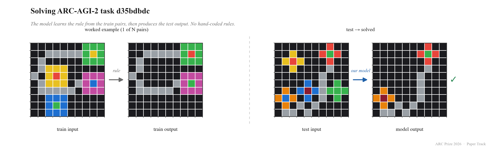
ARC and the measure of intelligence. ARC was introduced to measure skill-acquisition efficiency rather than skill itself [1]. ARC-AGI-2 [2] raises compositional difficulty while keeping tasks human-solvable, widening the human/machine gap that frontier models had begun to close on ARC-AGI-1.
Test-time training. The dominant 2025 approach fits a small per-task adapter at inference, trading test-time compute for generalization. The ARC Prize 2025 technical report [3] identifies this, together with heavy synthetic pre-training and disciplined engineering, as the core of the winning NVARC solution [4], whose released model we build on directly. We hold this recipe fixed and ask what survives a single consumer GPU.
Two different things are called test-time training. The name collides, and the collision matters for reading anything in this paper against the wider literature. In the ARC line, TTT means supervised fine-tuning on a task's demonstration pairs, which are labelled data the task supplies; this is the sense used throughout here and the sense the ARC Prize 2024 report fixes [11]. In the older line beginning with Sun et al. [14], TTT means self-supervised adaptation on the unlabeled test instance itself, with descendants using entropy minimisation or masked autoencoding [15]. Akyürek et al. [13] inherited the ARC-local sense and flagged the difference themselves. The two procedures share a name and almost nothing else.
A third sense has since arrived and is worth separating explicitly, because it is the one a reader is most likely to encounter now. NVIDIA's TTT-E2E compresses a long context into the weights by continued next-token prediction at inference, on top of a meta-learned initialization, achieving inference latency constant in context length where attention is quadratic. It is an architecture rather than a procedure, since the meta-learned pre-training is what makes the test-time descent work, so it cannot be retrofitted onto an existing transformer's weights; and it is lossy by design, keeping what is predictive and discarding detail. Neither property fits the setting here. Our prompts are about 2,000 tokens against an 8,192 cap we measure to be non-binding, so the complexity it optimises is slack for us, and ARC is scored on exact grid equality, where 88% of a median output is a verbatim copy of its input, so discarding detail discards the answer. We name it because the acronym now covers three distinct things and papers in this area are increasingly ambiguous about which they mean.
The distinction has a consequence we inherit rather than choose. Our pipeline descends from the ARChitects [12], who state that they compute gradients only on output grids, so that “the model is never tasked with predicting an input grid”. The test input, the single largest piece of task-specific information available, therefore reaches our adapter only as a decode-time prompt and never as a loss target. Whether that is a missed opportunity or a correct design choice is an empirical question, and Section 5.10 answers it for our system.
Augmentation and voting. Predicting under the eight dihedral symmetries of the grid, inverting each prediction back to the original frame, and voting is a standard self-consistency device for ARC. It is cheap, training-free, and provides a usable confidence signal (Section 3.3).
Synthetic data. Procedural generators such as RE-ARC [6] and LLM-mutated corpora supply the augmented grid data these models are trained on. We use RE-ARC only in a base-model probe (Section 5.3), not in the results below.
Efficient and on-device inference. Our engineering contribution, getting a custom-vocabulary grid transformer to decode near the memory-bandwidth roofline on a consumer card and then serving per-task adapters on it, sits in the practical lineage of quantized GGUF inference. The novelty is not the engine but the demonstration that the full TTT recipe, adapter serving included, fits one 16 GB card, and a measurement of exactly where it stops.
We use the NVARC qwen3_4b_grids15_sft139 model, a Qwen3-4B [5] with a 16-token vocabulary, the ten grid colours as digits, a newline, two role markers, and three specials (Appendix D). A grid is serialized one token per cell, and a colour value equals its token id. Because the role and special tokens cannot be produced by tokenizing text, we assemble every prompt at the token-id level as a ChatML few-shot sequence. Getting this byte-exact is the single most important correctness condition, since a one-token drift between training and inference silently destroys accuracy.
Our most consequential finding concerns throughput. Decoding a 4B model is memory-bound. Each token streams the full weight matrix from VRAM, so for a weight footprint M on a card of bandwidth B the decode rate is bounded by a first-order roofline
With B = 896 GB/s, Eq. (1) gives 132 tok/s in bf16 (M = 6.77 GB), 249 in Q8_0 (M = 3.6 GB), and 444 in Q4_K_M (M = 2.02 GB). The standard Hugging Face eager path prefills healthily (≈3,400 tok/s) but decodes at only ≈13 tok/s, about a tenth of the bf16 roof, because of per-token framework overhead with no CUDA graphs. The usual remedy, compiling the decode step, is unavailable on this platform. torch.compile needs Triton, and Triton has no native-Windows backend (Appendix C).
The fix is to change engines. We convert the model to GGUF and serve it with llama.cpp. The custom vocabulary needs two small, documented converter patches (Appendix A): the unknown tokenizer hash is mapped to the qwen2 pre-tokenizer it actually uses, and two throwaway byte-pair merges are added to satisfy a loader that requires a non-empty merge list (they never fire on grid text). The prebuilt CUDA 12.4 binary runs on the Blackwell card through PTX just-in-time compilation. Measured decode rises to 102 tok/s in bf16, 170 in Q8_0, and 244 in Q4_K_M (Figure 2), a 13× speedup over eager at Q8_0, which we adopt. It is near-lossless (14 of 15 training tasks reproduced exactly under greedy decoding) and has a 3.6 GB footprint. The server's default prompt cache needs one note. It reserves ≈680 MiB per unique prompt, and since every ARC prompt is unique it yields no reuse and destabilizes sustained generation, so we disable it and run a single supervised stream.
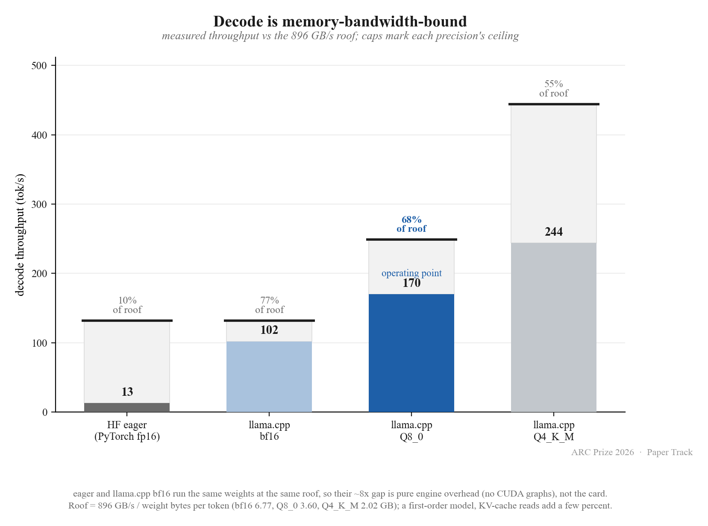
Let f be the served model and G the eight dihedral (D4) symmetries of the grid. For a test input x we generate one prediction per symmetry, invert it back to the original frame, and vote. Writing nc for a candidate's vote count and c for its mean sequence log-prob,
where select returns the two distinct candidates with the highest vote count, ties broken by mean log-prob, and emits them as the two attempts the metric allows. The vote count is itself a usable confidence signal. Agreement across symmetries predicts correctness (Figure 6). The whole offline system (the trainer, the converter, and the server, which never share VRAM) is sketched in Figure 3.
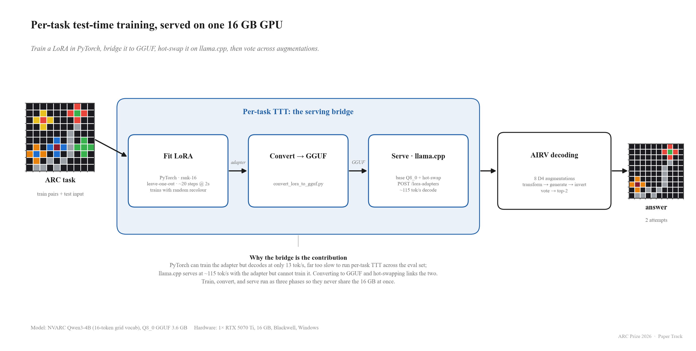
For TTT we fit a per-task LoRA adapter ΔW = s BA of rank r and scale s on the task's own train pairs T, with a leave-one-out target and the loss masked to the answer tokens:
drawing a fresh random augmentation each step. Capping the few-shot context to ≈1,600 tokens drops a training step from ≈13 s to ≈2 s, so training is no longer the expensive part.
The harder problem is serving the trained adapter. TTT must run in PyTorch, where decoding is the slow 13 tok/s and intermittently becomes quadratic after a step. The fast engine does not train. We bridge them (Figure 3): train in PyTorch, save each adapter, convert it to a GGUF adapter, and hot-swap it on llama.cpp through its /lora-adapters endpoint, where decode holds ≈115 tok/s with no stalls. We run three phases (train all, convert all from a clean process, then serve and generate all) so the two frameworks never share VRAM (Figure 4). Large-grid tasks remain too VRAM-bound to train and are excluded by their largest-train-pair token length (Figure 4).
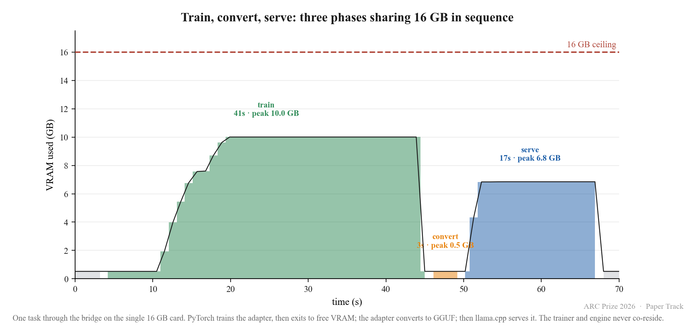
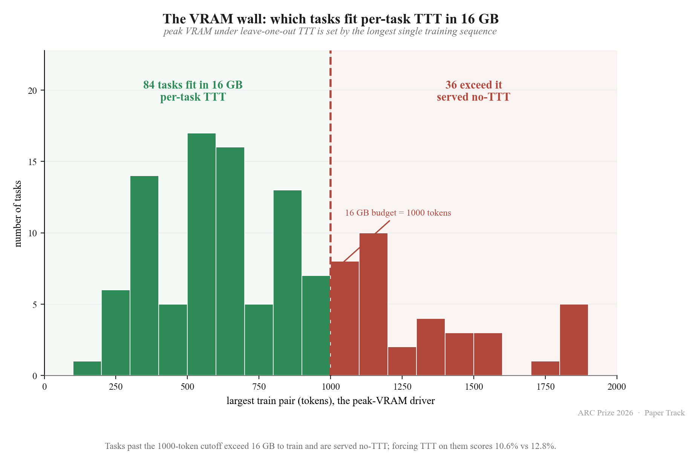
Two hardware regimes appear in this paper, and every number belongs to exactly one of them. Every public-eval number, the 12.79% baseline, the 17.6% trainable-task peak, and the 16.28% blend, is measured on the single RTX 5070 Ti against the 120-task public evaluation set, and all method development ran there. Every leaderboard number is measured by Kaggle's offline scoring rerun on the contest's four-L4 node, against the hidden 240-task set (120 semi-private plus 120 private). The submissions through v6.1 use the four L4s only to shard tasks for throughput, since the bf16 per-task training does not fit the 12-hour budget on one card. No single task there needs more than one 16 GB GPU, so the method under test is the single-card recipe. The v7 entries are the one exception and this paper marks them as such wherever they appear. They reproduce a public pipeline whose per-task training runs at rank 256 over an eight-thousand-token context, which fits 16 GB only under an attention kernel we identified after those runs and would still need roughly forty hours on one card against the twelve the contest allows, so those numbers measure competition hardware rather than the card this work is about. They are kept in the same table deliberately, because the distance between the best single-card entry and the best four-L4 entry is the most direct measurement we have of what the constraint costs.
That exclusion is measured rather than assumed. Sweeping LoRA rank against sequence length on the single card, with training configured exactly as our shipped path, every rank from 32 to 256 fits comfortably at a two-thousand-token sequence and every one of them fails at four thousand. The blocking term is neither the adapter nor the optimizer, which together account for under a gigabyte at rank 32 and three at rank 256. It is activation memory, which grows from roughly 2.6 GB at two thousand tokens to roughly 8.5 GB at four thousand, a factor of 3.3 for a doubling of length. That superlinear growth is attention materializing its score matrix. Leaner adapter dtypes buy a full rank doubling at equal memory, enough to run rank 256 at two thousand tokens in 14.5 GB, but they leave the activation term untouched. On that evidence we recorded the context as a hard wall and the eight-thousand-token configuration as beyond the card.
That conclusion was wrong, and the sweep above contains the reason. It never chose an attention kernel. Repeating the measurement with the backend forced rather than left to the framework's dispatch (Table 1) moves the wall entirely. Under cuDNN attention the rank-256 configuration trains at an eight-thousand-token sequence in 14.86 GB at 5.04 seconds per step, on the same card that had failed at four thousand. The framework's automatic selection is numerically identical to the forced math backend at both lengths, because the flash and memory-efficient kernels report no available implementation for this GPU in this build, so the dispatcher had been falling back to the quadratic path throughout. The result is corroborated from outside the measurement, since the four-L4 runs fit the same training configuration into 13.0 GB under a flash-attention kernel, and two different memory-efficient implementations on two different cards landing within two gigabytes of each other is the agreement we would expect.
Three limits on that result, stated because they bound what follows from it. It measures training memory for a single sequence at batch size one, where the deployed pipeline may pack differently. It measures memory and step time rather than numerical equivalence, which would need a paired run against the math backend on a real task. And it shows only that the training configuration fits, not that the pipeline runs end to end on one card, which would additionally require porting that pipeline off a training library with no working install on this platform.
What it does settle is which resource binds. At 5.04 seconds per step the 128-step schedule is about eleven minutes for one adapter, so the 240-task contest set would need roughly forty hours against a twelve-hour budget. The card holds the winning configuration and cannot serve it in time. That is a throughput limit rather than a capacity limit, and it is the second time in this work that a ceiling we recorded turned out to be a default rather than a property of the hardware, after the six-hundred-token training truncation of Section 5.8. Both were found by re-examining a measurement we had already filed as settled.
| attention backend | 2048 | 4096 | 8192 |
|---|---|---|---|
| eager | 13.44 | 19.33 (thrash) | |
| sdpa, framework default | 13.94 | 18.62 (thrash) | |
| math, forced | 13.94 | 18.62 (thrash) | |
| memory-efficient, forced | no kernel available for this GPU | ||
| flash, forced | no kernel available for this GPU | ||
| cuDNN, forced | 12.31 | 12.80 | 14.86 |
The AIRV pipeline without TTT scores 12.79% (22 of 172 test outputs) on the public evaluation, a clean single-stream run completing in ≈78 minutes, and 6.53% on the hidden set, a halving we return to in Sections 5.1 and 5.3. Adding per-task TTT roughly doubles the hidden score. Table 2 gives the full progression.
| version | configuration | hidden score (%) |
|---|---|---|
| v1 | no-TTT AIRV, eight greedy D4 views | 6.53 |
| v2 | + per-task TTT (160 tasks) + colour-perm | 11.94 |
| v2.1 | scaled TTT (232 tasks), single scale, no colour-perm | 13.61 |
| v3 | + three-scale vote | error |
| v3.1 | + two-scale vote + colour-perm | 12.78 |
| v4 | + more-candidates sampling (four per view) | 13.19 |
| v5 | + white-box plausibility filter | 12.78 |
| v6 | deep-regularized TTT (60 steps, rank 32), disk-exhausted | 12.36 |
| v6.1 | deep-regularized TTT, all 232 tasks trained | 18.19 |
| v7 | sorokin reproduction as ported (Section 5.6) | 16.81 |
| v7.1 | same pipeline with both port defects repaired | 30.56 |
| v7.2 | identical build, an accidental repeat run | 30.97 |
| v7.3 | + loss-gated skip and greedy fill of empty slots | 28.61 |
| v7.4 | cap wired to 1200, intended as a control, confounded by 24 unbudgeted fills | 29.44 |
| v7.5a | + symbolic object-count prune, the theorem's program-execution channel (Appendix F) | 27.92 |
| controls and replicates | ||
| ctrl | the notebook we first blamed for 33.89, forked unmodified | 28.06 |
| ctrl2 | the notebook actually titled for 33.89, forked unmodified with its author's own attachments | 28.47 |
| v7.2r | v7.2 re-run unchanged, the same-configuration replicate | 30.56 |
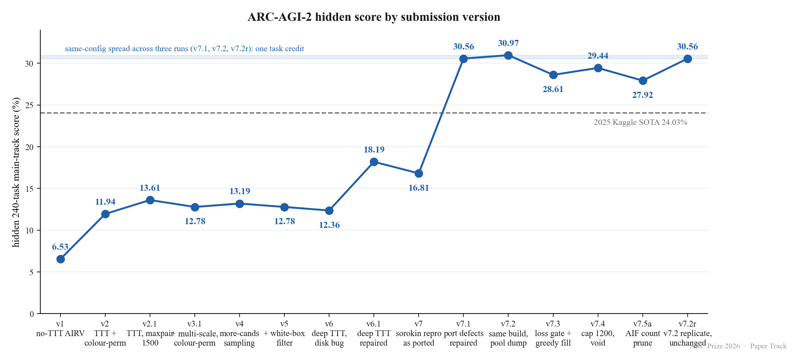
The replicate, and the error bar every comparison had been assuming. Every comparison above silently assumed the hidden score of a fixed configuration is stable, and nothing in the project had ever measured it. After the fifth consecutive build scored below v7.2, with the scores split into two clusters and nothing between them, the cheapest explanation left was that 30.97 had been a favourable draw and the regressions were noise, so we spent a submission on the only experiment that answers it, v7.2 resubmitted byte-identical except for the size of its own commit run. It scored 30.56. On three runs that looked like a range of 0.41, one task credit, and a standard deviation of 0.24, and we wrote that a lever must move roughly 0.4 points to be distinguishable from a re-run. That estimate was wrong by a factor of six. We kept resubmitting the same immutable kernel version, once a day, for as long as the quota allowed. Twelve executions of one artifact, verified identical by script version rather than by description, scored 30.56, 32.64, 28.47, 31.39, 30.56, 30.56, 28.89, 28.89, 30.56, 28.47, 28.89 and 28.89: a range of 4.17 points, ten task credits, on code that cannot have changed. Mean 29.90, standard deviation 1.34, with a 95% interval on that standard deviation of [0.95, 2.27]. Measured against it, every build this project called a regression, both public notebooks we ran as controls, and the configuration we called our best all fall inside 1.8 standard deviations. The consequence is a budget rather than a caveat: separating two configurations at 80% power needs roughly four points and three runs per arm, so one submission a day permits about eight properly powered comparisons in a season. The winners' own writeup remarks in passing that they “saw 1-2 points variability in the scores across different re-runs of the same notebook”, and their batched decoder is nondeterministic by construction, logits changing with batch composition. The variability was known inside the strongest team and, as far as we can find, never measured or accounted for by anyone. Every ablation on this leaderboard, including theirs, is read against noise nobody had quantified.
A third submission of the reproduction, identical to the second except that it leaves the per-task search cap at the upstream default of 1800 seconds rather than the 1200 we had chosen for margin, scored 30.97% and placed 264th. Two facts about that number matter more than its size.
Roughly sixty entries on the leaderboard carry it exactly. A tie that wide is not coincidence, it is the public notebook being forked and submitted unchanged, which identifies 30.97 as that notebook's number rather than as anyone's result. Our restoration therefore converges on the public baseline exactly rather than approximately, and that is stronger evidence that the two port defects we isolated account for the whole difference than the near-agreement we claimed before. It is also, plainly, a reproduction rather than a differentiating result, and we report it as one.
We first read the 0.41 points between our two runs of it as the per-task cap, since the two builds differed by nothing else we had declared. That reading was wrong, and its correction is the most useful thing in this section. An audit of the generated notebooks found the cap knob had never reached the solver at all. The build script rewrote a guard it expected to find as a local variable comparison, the source writes the same test inline, the pattern never matched, and so every submission from the first reproduction onward ran the same hardcoded 1800-second cap while its configuration banner printed whichever value we had set. The two runs were therefore the identical build at the identical cap, and their 0.41-point spread is run-to-run variance. We read that as the noise floor and it was merely the smallest gap we had yet seen; the measured floor is 1.34 and the range is ten task credits, and having it changes how the rest of the table should be read. Appendix F derives the resolution limit that number instantiates. One further observation follows for anyone reading the leaderboard rather than the method. A single task credit separates an entire sixty-entry cluster, so on this board the cheapest available gain is not a better model but a better use of the twelve hours.
The measurement run's own log then priced that claim. Of its 24821 task-seconds, 71 percent went to tasks that yielded nothing, no solve and no correct grid anywhere in the candidate pool, and the two longest tasks each burned to within sight of the 1800-second cap for nothing. One task in the forty trained normally and then decoded no output at all, a forfeited slot that scales to about four on the public 120 and plausibly eight on the hidden 240. Final training loss predicts these dead tasks weakly but usably at the extreme, cutting every task whose adapter finished above a loss of 0.05 reclaims 2330 seconds while touching no task the selector harvests, since the one such task with a correct grid in its pool was being lost at selection anyway. Three scheduler changes follow, none touching the method. A task whose search returns nothing falls back to a plain greedy decode with its already-trained adapter, which can only fill otherwise-empty slots. A task whose training loss ends above the cut serves the cheap greedy answer and skips the expensive search. And the time both changes reclaim becomes margin for the per-task cap, the one knob already measured to buy a task credit. The next submission carries these as a scheduling variant of the unchanged pipeline.
The public board then handed us what looked like a controlled measurement and was not one. We report the episode in full, including three wrong explanations we published internally along the way, because the correction cost a week and the general lesson is worth more than the specific result.
A public notebook restoring this same pipeline displayed 33.89 against our restoration's 30.56. Taking that at face value, we spent the following week attributing the 3.33-point deficit. First to the dependency tree, since its kernel metadata mounts the original author's wheel set and model upload where ours mounts a rebuild whose pins predate the current execution image, and our logs had warned throughout that compiled extensions were being skipped for a version mismatch. That reading priced the software environment at 3.33 points and reframed the sixty-entry cluster at 30.97 as a population unknowingly running a degraded one. Rebasing onto that environment scored 28.61. Second to the per-task cap, after an audit found the cap knob had never reached the solver, on the argument that a looser cap lets slow tasks eat the wall until the queue tail is dropped unstarted. That rested on the belief that the public build ran a tighter 1200-second cap; it forks a source that hardcodes 1800, as did every submission of ours through the wiring fault, so the two sides had agreed on the cap all along. The build sent to test it scored 29.44 and moved a second factor besides. Third to two changes of our own in the solver, deleting the port's symbolic arm and regrouping its two-view search batches into fours, which a diff read module by module leaves as the only differences that survive into deployment.
Then we forked the public notebook unmodified and submitted it from our own account. It scored 28.06, 2.91 points below the restoration it was supposed to be beating. We took that as showing the deficit had never existed, and reported it that way. That reading was itself wrong, and the way it was wrong is the most useful thing in this section.
The notebook we forked was not the notebook the score belonged to. Enumerating the competition's public notebooks, which are published precisely to be read, turns up one titled for the score in question and carrying it in its own name, along with a byte-identical fork of it. That notebook runs the same base model and the same dependency tree as ours, and differs from our best submission in exactly two respects, both of which govern how much search fits inside the budget. It computes the decoder's per-node score on the GPU over the twelve grid tokens rather than as a full-vocabulary softmax moved to the CPU, which is algebraically the same quantity and so cannot change what an unbounded search finds, but the search is bounded and the cheaper form covers more of the tree per second. And it caps each task at 1200 seconds rather than 1800. Every other difference we had agonized over is absent: it removes the symbolic arm and uses the four-view batching, both of which we had arrived at independently.
So the correct account is neither the one we started with nor the one we replaced it with. The number was real. A public artifact producing it was available for the whole period. We measured a different artifact, concluded the effect was illusory, and wrote that up with more confidence than testing one file supports. The 28.06 measurement stands and is worth keeping, since that notebook demonstrably does not produce the number attached to it in our reading of the board; what does not stand is the inference from one such test to the claim that nothing produces it.
The exact size stays uncertain and we decline to sharpen it beyond what the design supports. The control carries the public author's own attachments, so against our 30.97 it moves both the code and the environment and reads +2.91; against our 28.61, which shares its environment and cap, it reads +0.55 but that build carried two scheduler additions of its own. Both comparisons favour the restoration and neither isolates it. One reading does invert cleanly: our own environment now looks better than the one we had priced at +3.33, since every build we ran on the public author's mounts scored below every build we ran on ours. We state that as a direction, not a number, having just been taught what happens when a single uncontrolled comparison is promoted to a price.
The identified artifact was then run as its own control, forked byte-identical with only the ownership metadata changed and mounting its author's original wheel tree and model upload exactly as its metadata specifies. It scored 28.47. That is the second public notebook displaying a 33.89-class number to land near 28 when actually executed from a clean account, against 30.56 to 30.97 for three runs of our own unchanged pipeline (Figure 4b), and it converts the episode from an anecdote about one notebook into a pattern about the board. It also closes two of the three explanations this section opened with. The environment hypothesis is refuted outright rather than merely unsupported, since this control ran the exact attachments we had priced at +3.33 and scored below every build we have run on our own mounts. And the per-task cap loses its empirical motivation, since the build that runs 1200 seconds scored 28.47 while ours at 1800 scored 30.97; the one-factor question remains formally open, confounded by everything else the two builds do not share, but nothing any longer suggests the answer is positive. A rig benchmark of the remaining mechanism, the GPU per-node arithmetic, measured 1.33× the candidates of the CPU form at a fixed budget with an identical truth-in-pool count of 1 of 7, so the stated search-throughput mechanism is at best weakly present on our hardware and bought nothing that scores.
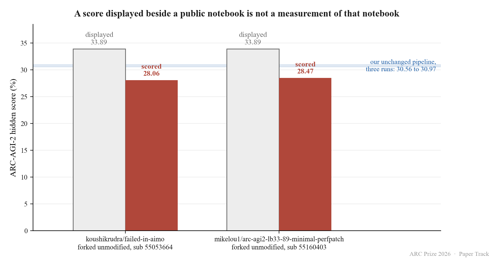
The durable lesson survives both errors and is sharper for them. A score displayed beside a public notebook is not a measurement of the code in front of you, and it does not even identify which code it came from. A submission binds to a notebook version and its attachments at submit time, both mutable afterwards and neither auditable, and a leaderboard entry names a team rather than a file. We treated a number as though it pointed at an artifact, first believing it and then disbelieving it, when what it actually required was finding the artifact. The remedy is not scepticism, which produced our second error, but enumeration: the competition publishes its notebooks, and reading them is both permitted and the only way to know what a number refers to. We did that a week late, and it took an afternoon.
The costs are worth stating plainly, since they are the argument for the discipline rather than decoration on it. Believing the number bought three quantified explanations of a gap, one of them elevated to a claim that the software environment outweighed every method lever we had measured. Disbelieving it on one control bought a confident published assertion that the effect was illusory. Enumerating the notebooks bought a two-line mechanism, testable offline, that neither belief would ever have produced. Roughly sixty leaderboard entries share our 30.97 exactly, which is what forking public notebooks produces; the same practice means the artifact behind almost any number is sitting in public, and the reason to look is that it is cheaper than any amount of reasoning about the number.
Best-first decode order, refuted. Every Kaggle-track decoder since 2024 is threshold-DFS, and the general decoding literature offers anytime best-first enumeration as an alternative that no published ARC system uses. It makes a testable claim: under truncation, expanding nodes in cumulative-likelihood order should reach the first correct grid in far fewer expansions than depth-first order does. We instrumented the deployed decoder to log every node expansion and emission over sixteen stratified tasks, 30,480 batched forward passes and 217 completed candidates with twelve of sixteen decodes budget-truncated, and replayed each tree under both orders at equal information. Ten tasks put a correct grid in the tree. Median saving to the first truth is 2.9 percent, no task is worse, but the distribution is the finding: three tasks save nothing, four save one to three percent, and the whole effect sits in three tasks saving 13, 26 and 60 percent. Nearly all negative log-likelihood accrues at a handful of branch points, the forced runs between them are order-invariant, and threshold-DFS sorts each node's children before descending, so it already traverses in nearly likelihood order. We record this as a refutation of our own prediction, which cost one logging run.
The methodological cost is measurable in this document. Three published explanations, two of them quantified to two decimal places, one of them elevated to a central claim about software environments being worth more than method, all of them explaining a gap that a single control retired in one submission. The control was cheap and available on day one. We ran it seventh. Each explanation was individually reasonable and collectively they formed a research programme aimed at a phantom, which is the failure mode this section exists to record: we never tested whether the thing we were explaining was real. Section 5.1 takes it up as the project's sharpest instance of a recurring habit.
The scaled single-scale configuration (v2.1) reached 13.61%, ranking 468 of about 4000, and four candidate-side submissions failed to beat it. One errored in the scored rerun, and each of the three that scored carried exactly one lever that had lifted or tied the public evaluation, multi-scale voting with colour permutation, more-candidates sampling, and the white-box plausibility filter, and each regressed the hidden score (Section 4.4 gives the levers and the mechanism). The eight greedy D4 views at a single adapter scale are a local optimum that the candidate and voting side does not improve, and the repeated public-to-hidden reversal is itself a finding (Section 5.1). The break came from the other side of the pipeline. A deep-regularized adapter that trains longer at a higher rank (60 steps, rank 32, Appendix B), moving the per-task training rather than the vote, lifted the hidden score to 18.19% in v6.1, a 4.58-point gain and the first configuration to beat v2.1. Its intermediate form v6 scored 12.36% as the same recipe crippled by a disk-exhaustion bug that left 73 of 232 tasks with no adapter, and fixing the scratch path recovered the full lift. This is the paper's thesis made concrete, the candidate and voting side is saturated and the per-task training side is where the hidden number moves. For reference the 2025 winner reached 24.0% with TTT [3] on the same Qwen3-4B base lineage with a more developed recipe.
The 13× decode improvement from changing engines (Section 3.2, Figure 2) is the single most important result for this hardware class. It turned an overnight, frequently-failing process into a sub-90-minute evaluation. On one consumer GPU, the inference engine dominated every other knob we touched (Figure 5).
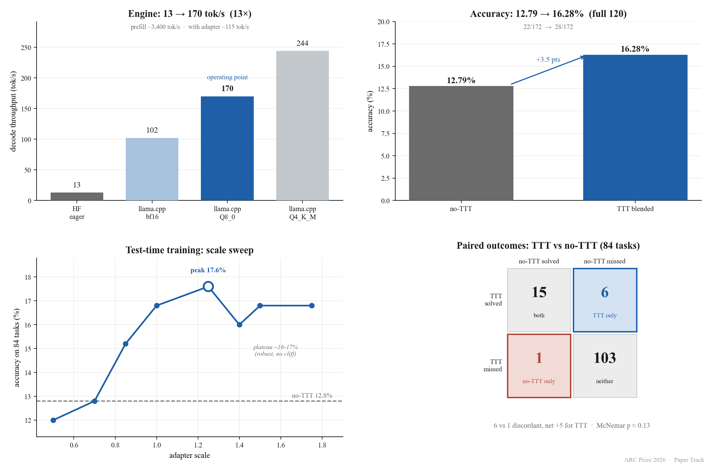
With generation fixed, we first swept the adapter configuration on 15 small-context tasks, scoring each against no-TTT on the same tasks (Table 3). The standard configuration overfits (its training loss reaches 0.000) and ties the baseline. The regularized configuration recovers a one-task lift. An over-aggressive reduction undertrains and ties again. That is coherent with an overfit diagnosis, though one task on 15 is only a hint.
| configuration | TTT | no-TTT |
|---|---|---|
| 40 steps, rank 32, no dropout | 3/23 | 3/23 |
| 20 steps, rank 16, dropout 0.1 | 4/23 | 3/23 |
| 8 steps, rank 8, dropout 0.05 | 3/23 | 3/23 |
We then validated the regularized configuration at scale, on the 84 evaluation tasks small enough to train on a 16 GB card, against no-TTT on the same tasks (Table 4). The lift holds and strengthens, adding +5 test outputs for a four-point gain (≈31% relative). The paired breakdown is clean. Of the tasks the two methods disagree on, TTT is right on six that no-TTT misses and wrong on only one. With seven disagreements this is not individually significant (exact McNemar p ≈ 0.13, Appendix B), but three measurements now agree in direction (sweep +1, scale +5, six-to-one discordant), and no-TTT scores 12.8% here against its 12.79% full baseline, so the subset is representative.
| method | correct | accuracy |
|---|---|---|
| regularized TTT | 21/125 | 16.8% |
| no-TTT | 16/125 | 12.8% |
Five further levers, each measured on the 84 trainable tasks or the full evaluation (full per-scale numbers in Appendix B). The adapter scale matters. Accuracy peaks at 17.6% at scale 1.25, then declines (Figures 5, 6). Colour permutation lifts the no-TTT baseline to 14.4% but does not stack with the already colour-robust adapter. Forcing TTT onto the big-grid tasks does not help. We recorded the VRAM exclusion as a genuine ceiling rather than a missed opportunity, a conclusion Section 5.8 re-examines, since that early run trained under a 600-token context cap that admits a single demonstration on these tasks. The fourth lever is how many candidates the vote sees, and it cuts both ways. Sampling each of the eight D4 views four times raises the no-TTT score from 12.79% to 13.95% on the full evaluation, but like colour permutation it does not stack with the per-task adapter. Carried into a TTT submission those extra sampled candidates regressed the hidden score from 13.61% to 13.19%, and stacking multi-scale voting and colour permutation regressed it further to 12.78%. The adapter already concentrates the model on its single best answer, so more candidates help only the unsure no-TTT base and dilute the confident TTT one.
The fifth lever is a white-box plausibility filter adapted from a small-model recipe [7], which drops candidates that violate the task's colour palette or the train pairs' size pattern before the vote. On the public evaluation it is exactly neutral. The eight greedy D4 candidates are already plausible, so filtering changes no attempt on any of the 120 tasks, and where its inferred size rule misfires, on tasks whose train pairs coincidentally share one output size while the true rule varies, it empties the candidate list and the pipeline falls back to the unfiltered vote. Submitted as v5, it regressed the hidden score from 13.61% to 12.78%, a roughly two-task loss consistent with that size-rule tail landing on hidden tasks where the filter kept a plausible wrong candidate instead of emptying, though run-to-run TTT variance cannot be excluded from outside. The asymmetry is the lesson. A lever that measures neutral on the public set has no upside and only tail risk on the hidden one.
The eight greedy D4 views at a single scale are a local optimum that neither more votes nor vote filtering beats. The best blend, TTT at scale 1.25 where trainable and no-TTT elsewhere, reaches 16.28% on the full 120-task evaluation, up from 12.79%. The honest summary is that naive per-task TTT ties a strong no-TTT AIRV baseline, while a regularized, scale-tuned TTT beats it by a consistent if modest margin.
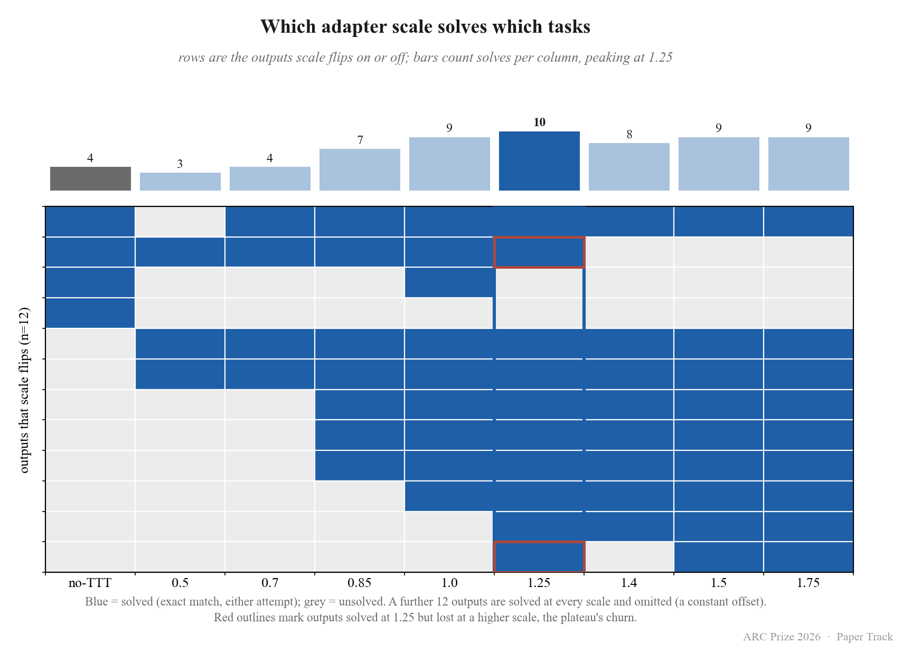
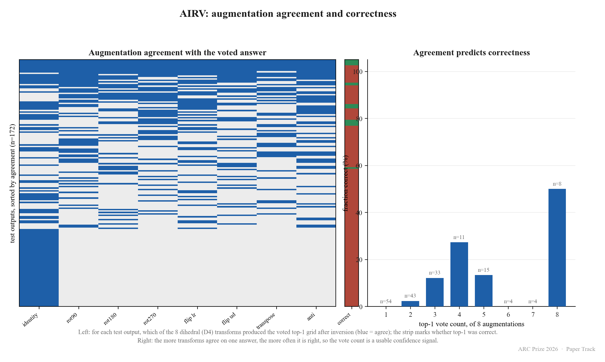
First, on a single GPU the inference engine is the dominant design choice. Quantization and sampling mattered far less than the 13× we recovered by moving decode off the eager path. Second, the real obstacle for TTT is the serving bridge. Training needs a gradient framework, fast generation needs an optimized engine, and per-task TTT produces a fresh adapter the engine must serve. We show this bridge is buildable on one card, and that once it exists the open question is not plumbing but regularization, because the small per-task training set overfits easily. Third, a 4B model is bimodal on these tasks. It solves or it misses with little partial credit, so the refinement family that defines the current frontier needs an external partial-credit signal to work at this scale. A method that only re-ranks the model's own outputs stalls (Section 5.3).
Fourth, public-eval gains must be re-validated in the exact deployed condition, because they do not transfer on their own. The level drops, the no-TTT system halves from 12.79% public to 6.53% hidden. More telling, the deltas reverse. The three candidate-side levers that lifted or tied the public evaluation, colour permutation with multi-scale voting, more-candidates sampling, and the plausibility filter, each regressed the hidden TTT score when submitted (Table 2). Two mechanisms compound. A lever validated on the no-TTT base meets a different system once the adapter has sharpened the vote, and a lever that measures neutral on one task distribution still carries tail risk on another. The operational rule this bought is that a lever counts as validated only in the exact submission condition, and a lever that measures neutral is never shipped.
That rule has one clean counterexample and it sharpens the rule rather than weakening it. Repairing the community port's two defects was worth eleven points on the public slice and carried to the hidden set in the same direction (Section 4.1.1). What transferred was a repair, the removal of a component that was actively discarding tasks and a batching change inside the search. What failed to transfer, every time, was a lever that re-weighted selection among candidates the system already had. The distinction is the same one Section 5.7 reaches from the pool statistics, and it is a more useful predictor than public magnitude: ask whether the change fixes something broken or tunes something working.
Fifth, and most expensive here, confirm that the effect you are explaining exists before you explain it. A public notebook displaying a score three points above ours produced, over one week, three quantified explanations of the gap, one of which we elevated to a central claim that the software environment outweighed every method lever we had measured. Forking that notebook unmodified and submitting it scored 2.91 points below our own build (Section 4.1.1). There was no gap. The control was the cheapest experiment available and we ran it seventh, after the explanations, because each explanation felt like progress in a way that re-measuring the baseline did not. Two properties of a research question should now trigger the control first: the effect comes from an artefact whose provenance we cannot audit, and the effect is the premise for a programme of work rather than one comparison. Both held from day one. The general form is that a number is evidence about the thing that produced it, and a leaderboard score beside a public notebook is produced by a submission whose code and inputs are not the ones on display.
We argue the right framing for compute-poor ARC work is accuracy per GPU-hour (Figure 7), and the map of walls reported here (the decode ceiling, the VRAM limit on large-grid TTT, and the overfitting of naive adapters, all in Figure 7) is a first step toward it. The findings tell a practitioner with similar hardware exactly which problems to solve first. Fix the engine before touching anything else, budget VRAM by largest-train-pair length, and regularize the per-task adapter rather than training it harder.
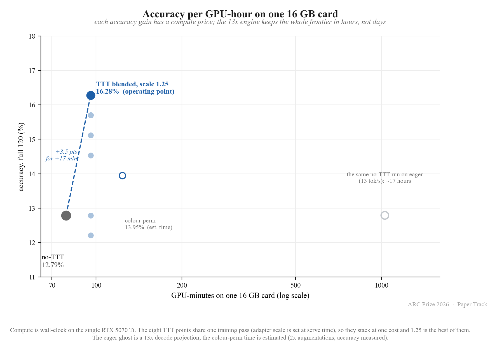
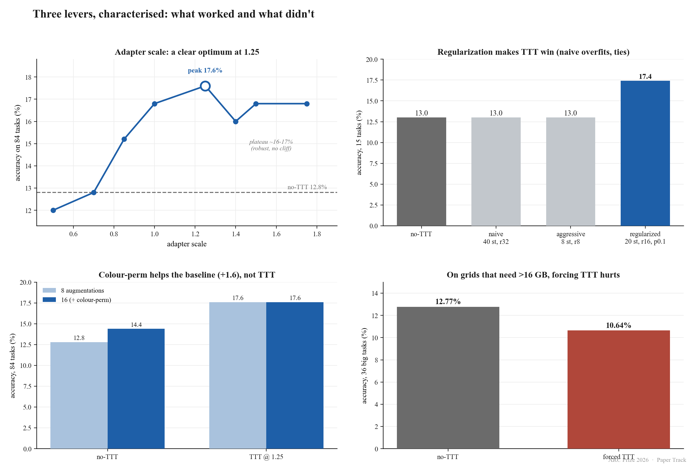
Our absolute accuracy is below NVARC's 24.0% winning result, by design. That score was set offline on four L4 GPUs, not a cluster, by a more developed recipe on the same Qwen3-4B base lineage, so the gap reflects recipe sophistication (synthetic data, ensembling, TTT scale) more than hardware. We study the one-card inference-plus-TTT recipe rather than maximize a system. The public-to-hidden gap is a finding, not a caveat (Section 5.1). Levels drop, the no-TTT system carries 12.79% public to 6.53% hidden while the TTT blend carries 16.28% to 13.61%, and deltas reverse, with every public-validated candidate-side lever regressing when submitted (Table 2). The public ARC-AGI-2 eval is the set every open recipe is tuned against, ours included, so the leaner the recipe the more of its public accuracy is public-specific. Part of the v1 drop may also be per-task failures in the scored rerun, which the later submissions instrument with a per-task log, and the TTT system's smaller gap is consistent with both readings. The 2025 analysis names verifier-guided selection and a refinement loop (check each candidate against the train pairs, then re-prompt on the discrepancy) as the central advance, so we built and tested it. It does not lift here. A passive form (weighting the augmentation vote by leave-one-out train fidelity) and an active form (verification-gated re-sampling on the tasks the base is unsure of) each match the plain no-TTT vote exactly on the eval slices we ran. The reasons are structural. The verifier is silent exactly where it is needed, since on a task the base misses it reproduces none of the held-out train pairs, so there is nothing to select between or correct toward. Our 16-token model also cannot read a natural-language critique, so the canonical re-prompt-with-the-discrepancy step is not even expressible. We also probed whether a one-time continued LoRA fine-tune of the base on official ARC-AGI-2 training data and RE-ARC [6] generations yields a better static model. It did not. The fine-tuned base scores 11.63% no-TTT against the stock base's 12.79%, so we ship the stock base. We recorded that at the time as evidence that more public data is not a free lever once a base is task-tuned, which was the right conclusion for the wrong reason, and the correct reason is worth more.
Reading the base model's own published training configuration settles it. Our base is the product of a full supervised fine-tune of a reasoning-tuned Qwen3-4B over a corpus whose named components include both the official ARC-AGI-2 training split and RE-ARC generations, alongside a synthetic set of order 106 puzzles built by an LLM pipeline that summarizes puzzle concepts, mixes them into hybrids, generates transformation code and executes it. We had therefore fine-tuned the model on two datasets it had already consumed. The 1.16-point regression is duplicate-corpus overfitting rather than a statement about data scale, and the general lesson is narrower and more useful than the one we drew: before adding data to a task-tuned base, read what the base was trained on, because the failure mode of training on a subset of your own pretraining corpus looks exactly like the failure mode of the data being useless.
The same document bounds what a single card can do about this from above. That fine-tune ran as a full update under tensor-parallel training across eight GPUs, not as an adapter, so reproducing or extending the base is not a matter of patience on one 16 GB card. The only base-side lever that remains open to us is data the published corpus does not already contain, which means running that concept-mixing pipeline ourselves, and we state it as an option we have scoped rather than one we have tested.
Building on that null result, we tested an expert-iteration self-training loop. We solve the official training tasks with the current model, distil the base on a curriculum of its own verified-correct solutions, and iterate. Exact-match grids impose a sharp constraint. A verified-correct solution on a training task simply is its ground-truth output, so a naive self-training corpus coincides with the data the continued fine-tune already used. We hoped to escape this through the curriculum, distilling only the near-miss tasks the base reaches but does not solve robustly, but a 200-task harvest shows that set is nearly empty. The base self-solves 194 of 200 training tasks under some augmentation (97%) and 191 by the robust vote (95.5%), leaving only three near-miss tasks. The base is saturated on its own training distribution, so self-training has no signal to add. The training tasks split into already-solved (nothing to learn) and unsolved (no correct trace), with almost nothing between. This is a second, sharper negative result on weight refinement, and it explains the fine-tune failure directly. On one GPU, with a base already tuned to the grid format, neither continued fine-tuning nor self-training moves ARC-AGI-2, because the public training data carries no signal the base has not already absorbed.
These three null results, the fine-tune, self-training, and the refinement loop, share one cause. The base is bimodal on ARC. It solves a task robustly or misses it entirely, with almost no partial-understanding middle (of the training tasks it harvests, 95.5% are solved robustly and only 1.5% are near-misses). Every method that refines, re-ranks, or distils the model's own understanding therefore has nothing to grip on the tasks it misses, and per-task TTT, the one lever that helped, is the exception that proves the rule. It does not refine partial understanding. Instead it manufactures new capability for the task. The implication for compute-poor ARC is concrete. The next lever must supply an external, continuously-gradable signal that is valid even where the base is lost, a program checked against the train pairs being the cleanest, rather than another pass over the model's own grid outputs.
We built that arm and measured it. A 1.5B model trained to emit programs in an executable DSL, sampled and kept only when a program reproduces every train pair, solved zero of the 101 ARC-2 evaluation tasks our transductive system misses. It generalized weakly on the easier ARC-1, about one held-out task in nine, but on ARC-2 the DSL cannot express the new compositional concepts, and the tasks the base misses are also the largest grids where the small proposer exhausts the card before it can search. The external-signal lever is therefore real but bounded by model scale on one GPU, the same wall the refinement family hits from the other side. The lever exists but needs a larger model to grip, which is exactly the move the full contest hardware allows (Section 5.4).
One experiment on this lever is built and unrun, and its motivation changed underneath it in a way worth recording. The community port carries a symbolic arm that we deleted wholesale (Section 4.1.1), and it returns two independent things. One is a solved flag that preempts the learned search entirely, and that half is measured harmful, taking 12 of 39 slice tasks with nothing correct to show. The other is an object count read off the demonstration pairs on the CPU while the adapter trains, which never preempts anything and only re-ranks beams the search has already produced. Our stub killed the second silently along with the first, and it is a weak but free instance of exactly what this section argues for: an external signal, valid where the base is lost, obtained by reading the demonstrations rather than the model's own beliefs, and therefore outside the ceiling of Appendix F that binds every selector built from model likelihoods. It costs no GPU, which is the constraint that defeated the 1.5B program synthesiser above.
We had staged that experiment to close a three-point deficit to a public notebook. The control in Section 4.1.1 then showed the deficit was never there, which removes the reason we were running it and leaves the reason we should have been running it all along. It is now a single-factor test on top of our best configuration rather than a catch-up move, and it is the only one of the three staged builds still worth a submission slot: the other two revert our changes toward a configuration the control has already measured at 28.06. The prediction registered before it runs is a gain of no more than two or three task credits, since the count is a coarse statistic that is silent on most tasks, and we note in advance that a coarse external signal producing a small real gain and a coarse external signal producing nothing are separated by less than the width of our error bar on a single submission.
Finally, the significance of the TTT lift is directional rather than conclusive (Appendix B). A full-eval paired run is the obvious next measurement.
Everything above holds a single 16 GB card fixed, but the offline contest gives four L4 GPUs, 96 GB together, and that hardware is where the real climb happens. As of late July 2026 the live public leaderboard is led by one entry near 65.8%, with second place near 38.6% and a chasing pack in the mid thirties, and every one of those runs uses the same offline no-internet sandbox our system does. On the available evidence the leader is the same NVIDIA Kaggle Grandmasters lineage that won the 2025 offline track and whose grid model our system reproduces, and their stated recipe is to move all complex reasoning offline into a large synthetic-data pipeline and train a small model that runs fast at evaluation. That framing matters for where the twenty-seven-point gap to second place actually lives. The contest's own 2025 technical report attributes the distance between the offline field and the higher application-track numbers to knowledge coverage and verifier-guided optimization rather than to any fundamental scientific breakthrough, which is to say the remaining lever is training-data scale and a working refinement or verification loop, not a decoding or selection trick of the kind we exhausted here. The higher numbers often quoted for ARC-AGI-2, a 54% Gemini refinement harness and frontier scores above 70%, come from a separate public track that allows internet and external compute, so they are not the bar we measure against [3]. The offline bar is the leaderboard above. The field runs test-time adaptation, heavy synthetic-data pretraining, and program search on the full 96 GB, and our best single-card score of 18.19% sits below it. Our faithful reproduction of the winning lineage's own pipeline, run on the four-L4 node it was built for, reached 30.97% and still sits far below the leader, which locates the gap in the base model and its training data rather than in the inference-time machinery we can run. None of our negative results argues against that climb, but none of them tests it either, so we state the scaling case as a falsifiable hypothesis for future work rather than as a claim. Every wall we mapped belongs to a 4B model on a single card, and the sharpest is bimodality. The model solves a task robustly or misses it entirely, which is the exact reason refinement and verifier-guided selection found nothing to grip. The hypothesis is that bimodality is a property of this model's scale and training rather than of the task. The falsifiable prediction is that a more capable base run in the 96 GB produces partially-correct candidates on tasks it does not solve outright, a measurable non-empty near-miss band where ours is 1.5%, and that this in turn reactivates the refinement and program-search levers that stalled here. Three of our measurements bound the hypothesis from below. A second small transductive model buys almost nothing, since our fine-tuned variant solves only two tasks the stock 4B misses. A union of our own two pipelines buys as little. The deep-TTT greedy vote and the restored DFS decoder share the same 4B and produce nested solved sets, the greedy arm adding exactly one task the decoder missed over the tasks both attempt, and that task already sat in the decoder's own candidate pool and was merely lost at selection, so the apparent diversity is a selection artifact rather than new capability. The Tiny Recursive Model family, the strongest small grid models available, scores far below our pipeline while needing more compute than one card gives it. That gap has not closed with time. The original TRM reports 8% on ARC-AGI-2, its 2026 denoising-recursion successor reaches only about 9.6%, and the winning team's own ensemble measured a TRM arm as adding nothing to a strong 4B, so any diversity that pays must come from capability rather than from a second small vote. One published result warns against reading the hypothesis as a bare parameter-count claim. A ~200M encoder-decoder system with test-time training and white-box filtering reports 27% on the ARC-AGI-2 semi-private set, ahead of the 4B-based 2025 winner [7], so method quality can dominate size, and our own four failed elaborations of the 4B's candidate machinery (Table 2) sharpen the same point from below. We read the 16 GB result as the place where this small-model recipe runs out. The prediction above is the test of what replaces it, and we leave it as stated, a hypothesis with a measurement that would falsify it, rather than as a promise.
Section 5.3 argued that the next lever must supply an external, continuously-gradable signal that is valid where the base is lost, and Section 5.4 offered one escape, a larger non-bimodal base, as a falsifiable hypothesis. We are building a second escape that stays on the single-card efficiency budget rather than betting on scale, and it follows directly from two measurements already in this paper. The AIRV vote agreement predicts correctness (Figure 6), so the grid model reports for free which tasks it has solved and which it has no grip on. And the base is bimodal, so on a missed task there is nothing to refine, only something to replace.
The system routes on the first fact and fills the gap with a method that does not share the base's blind spot. High-consensus tasks are banked with the grid model's own answer, which is most of the current score at a fraction of the compute. Low-consensus tasks, where the transductive model scores near zero, are routed to an induction arm, a code model that writes plain-Python grid transforms which we execute against the train pairs. A program that reproduces every train pair is verified on observable data in a way no vote can be, so its output becomes the first attempt and the grid model's guess falls back to the second. The two arms are complementary by construction rather than by hope, induction expresses the precise compositional rules transduction misses.
The design is deliberately do-no-harm. A banked task is byte-identical to the transductive submission, and a program is trusted only when it reproduces every train pair, so the arm can only add coverage on tasks the base was already missing. This is the property the five candidate-side levers lacked. Each of them rewrote the vote on every task including the ones already solved, and each regressed (Table 2). The one loss channel, a program that fits every train pair yet is wrong on the test and displaces a correct second attempt, is measured on the local eval before any submission. The arm also inverts the engine economy of Section 3.2. Verifying a program by running it is cheap, and where several programs survive we rank their outputs under the grid model's per-view likelihood, which is prefill-priced and about thirty times cheaper than the decode that produced them, so the system generates less and checks more. The whole arm runs inside the idle two-thirds of the offline budget the transductive submission leaves unspent.
This is the same idea whose cheap form failed in Section 5.3, and it is built to answer why. That probe used a 1.5B model emitting a fixed ARC-1 domain-specific language and solved none of the 101 missed tasks. The arm here uses a 14B code model emitting unrestricted Python, which addresses both named causes at once, model capacity and an expressive target language.
Status. The first probe is a disjoint-coverage run on the single card. A 14B code model (Qwen2.5-Coder) samples sixteen programs per task at temperature 0.8, on exactly the 101 evaluation tasks the transductive system misses, and a program is kept only if it reproduces every train pair. It solved none of them. More telling than the zero, across roughly 1600 programs only one task saw a program reproduce even a single train pair, so the model is not close anywhere. The programs are not the failure mode the arc-dsl proposer was. They are fluent and sensible. On a task whose output size changes with every example the model wrote a clean routine that extracts and sorts rows, which crashed because its fixed-shape hypothesis cannot produce a variable-size output, and on a task with a narrower output it wrote correct code for the wrong rule and returned the input width. The 1.5B DSL proposer failed because it could not express the concepts. This larger model expresses them freely and still cannot infer the rule from a few examples. The bottleneck is inference, not expression, and a general coder does not close it zero-shot on one card. Priming the coder with three verified worked-example solvers, one of them a variable-size crop aimed squarely at that failure, did not change the outcome. It solved none of the 101 and lifted the partial signal only from one task to two, with nothing reaching a near-miss. Two forms of a strong single-card coder, cold and primed, both come back empty, which is itself the result. The bottleneck is rule inference on the hardest tasks, and neither sampling more programs nor showing worked examples closes it at 14B on one card. A same-size reasoning model, which works through the transformation at length before it writes code, does not change the verdict either. On a bounded run over twelve of the missed tasks it solved none and reproduced no train pair, at roughly four minutes of reasoning per sample. Three model classes, a small restricted proposer, a strong instruct coder cold and primed, and a reasoning model, all fail to induct these hardest tasks on a single card, and the near-miss band stays empty throughout. We read this as a decisive single-card result rather than a tuning gap. The router is sound, vote agreement does report which tasks the grid model has solved, but the arm it would route to cannot grip the tasks the grid model misses without more compute than one card provides. That is the same wall Section 5.4 predicts, now measured from the induction side, and it is where the second arm's value waits on the full contest hardware.
The clearest evidence that the gap in Section 4 is method rather than model arrived from outside the project. A public notebook ports the 2024 ARC-Prize-winning pipeline, the ARChitects', onto our exact base and reports a score in the low thirties on ARC-AGI-2, more than double our operating point on the same weights. The port's lineage deserves naming. The pipeline is published by Ivan Sorokin, the author of the NVARC base model itself, as the notebook arc2_qwen3_unsloth_flash_lora_batch4_queue, and the variant we study is its community re-target to the 2026 contest. Everything we report about this system is reproduction and measurement of that public work, credited to its authors, and our contribution is confined to the analysis around it. It bundles two changes against our recipe. The per-task training is an order of magnitude heavier, a rank-256 adapter that also trains the embeddings and the output head at an eight-thousand-token context, where ours is rank sixteen at two thousand. And the decoder is not our greedy vote. In its place it runs a depth-first search over every completion whose running probability stays above a fixed floor, then selects among the survivors by the product of their likelihoods across fresh augmentations rather than by a majority.
We had named this decoder as the untried lever ourselves and never built it, so the first question is whether it is a separable part we could capture on one 16 GB card without the heavy training it ships with. We test it directly. Holding the adapter fixed at our rig-feasible configuration, we decode each task twice on the identical trained model, once with our greedy vote and once with the search-and-select, and score both against the solution. Only the decoder moves.
On our light adapter the search loses, and it loses for a reason that names the coupling. Over eighteen of the trainable tasks the greedy vote scored the equivalent of 5.17 solved tasks to the search's 3.33, 28.7 percent against 18.5. The mechanism is visible in the candidate counts. On task after task the search returns nothing at all, because no whole-grid completion clears the probability floor. A grid runs to about nine hundred tokens, and a little uncertainty at each cell compounds across all of them, so an adapter that is not sharply peaked pushes the probability of even its best completion under the floor. That floor is calibrated for a model trained hard enough to stay almost certain across the whole grid. Ours is not, so the search starves and forfeits tasks the greedy path still lands. The decoder is not a model-agnostic component we can lift. It is tuned to the sharp adapter the heavy training produces, and the two are one system rather than two levers. This is also why we could never have reached the field's level by swapping decoders on the pipeline we already had.
Status. Resolved, and the coupling did not save the decoder. Over thirty trainable tasks the rank-128 adapter, with the embeddings and output head trained as far toward their configuration as a 16 GB card holds, gives the greedy vote 24.4% against the search's 13.3%. The search fell further behind than it was at rank 32, not closer, because the sharper adapter still starves the probability floor on most tasks while the heavier training only helped the vote. On every configuration a 16 GB card can run, rank 32 and rank 128, the search loses to the vote. We read this as the decoder being inseparable from the full rank-256, eight-thousand-token training it ships with, which one card can hold but cannot serve inside the contest budget (Section 4.1), so the reach to the field's low thirties stays a claim to be settled on the contest hardware rather than a lever we could capture here. The lift we did capture, from 13.61 to 18.19, came from the training depth alone. A first hidden-set submission of the reproduction itself, run faithfully with the community port's bolted-on symbolic arm still active, scored 16.81%. Two facts inside that number matter more than its size. The public-to-hidden transfer is flat, 16.2% on the evaluation slice against 16.81% hidden, where every candidate-side lever we built ourselves lost points crossing that gap. And the symbolic arm is measured poison, on the evaluation slice it preempted twelve of thirty-nine tasks with its own answer and got none of them right, so the faithful reproduction understates the pipeline. The arm is stripped and the corrected variant is measured next. That measurement is in, and it also surfaced a second inherited defect, the community port had split the decoder's four-view batches into pairs, halving search throughput. With the symbolic arm removed and the original batching restored, the same evaluation slice rises from 16.2% to 27.2%, no tasks preempted, no timeouts, and half again more correct answers present in the search beams. Eleven points of the gap between the reproduction and its source's claim were the port's own mutations. Submitted to the hidden set, the restored variant scored 30.56%, against 16.81% for the same pipeline as ported and 18.19% for our own best single-card configuration. Three things follow. The transfer property held a third time, 27.2% on the evaluation slice against 30.56% hidden, so this pipeline carries its public number across the gap that every candidate-side lever of ours fell through. The original author's claimed tier is credible, since a faithful restoration lands within striking distance of it while the ported form did not. And the result is a reproduction, not a contribution of ours. What this work adds around it is the measurement, the isolation of the two port defects, the paired evaluation that priced each one, and the placement of the restored number against a single-card baseline so the hardware gap becomes visible.
A search-and-select decoder is only as good as its selector, and the restored pipeline of Section 5.6 throws away correct answers it has already found. To measure how many, we ran a build identical to the submitted one except for a gated dump of the entire candidate pool. It records, for every test output, each distinct candidate grid together with the number of augmented views that produced it, the beam likelihood of each view, and the per-augmentation likelihoods the selector consumes. Over forty evaluation tasks the run produced 60 test outputs across 39 tasks, one of the forty yielding no decoded output at all, holding 432 distinct candidate grids drawn from 847 decoded subkeys, of which 152 reproduce the ground truth exactly. Scoring follows the harness, where each task contributes one credit divided among its test outputs.
The dump is a replica of the deployed decision rather than a model of it. Reimplementing the shipped selector against the file returns 9.833 credits of 39, equal to the run's own scored output, so a candidate rule tested offline here is tested against the real thing at no GPU cost.
| selection rule | outputs solved | credits |
|---|---|---|
| published vote, deployed | 15 | 9.833 |
| confidence-weighted vote | 15 | 9.833 |
| augmentation likelihood alone | 16 | 10.333 |
| correct grid present in the pool | 19 | 12.333 |
The leak is large. Nineteen of the 60 outputs hold a correct grid somewhere in their pool and the deployed rule converts fifteen, 9.833 credits against a ceiling of 12.333, so 2.5 credits or 6.4 points of this slice sit inside candidates the system generated and then ranked away. The published rule and the confidence-weighted alternative select identically on all 60 outputs, neither gaining nor losing one, which is a third independent reading that the two are near-equivalent once deployed.
We then asked whether any reweighting of the statistics already in the pool closes that gap. Sixteen rules were scored against the dump, spanning the vote count alone, the beam likelihood alone, the augmentation likelihood alone, the deployed count-minus-penalty form at five weightings, a best-view variant taking the minimum augmentation penalty rather than the mean, and a length-normalised family motivated by summed log-likelihoods penalising physically larger grids. Exactly one rule gains. Ranking by augmentation likelihood alone, discarding the vote count entirely, recovers one output and loses none, for sixteen solved and 10.333 credits. The length normalisation is inert, since only 11 of the 60 outputs contain candidates that differ in size, and the normalised and unnormalised forms return identical solved sets.
| test output | pool size | correct grid (views / penalty) | selected grid (views / penalty) |
|---|---|---|---|
142ca369_0 | 10 | 3 / 18.64 | 4 / 10.57 |
3dc255db_0 | 13 | 2 / 13.57 | 1 / 7.36 |
3a25b0d8_0 | 7 | 1 / 5.96 | 7 / 4.69 |
4c7dc4dd_1 | 11 | 1 / 12.90 | 3 / 8.79 |
That gain does not survive inspection, and the reason is in the four outputs the deployed rule misses (Table 6). In every one the correct grid carries a heavier augmentation penalty than the grid the selector chose, so the signal does not merely fail to surface these answers, it actively orders them below the wrong one. On one output the correct grid was decoded more often than the grid that beat it and still lost, on the penalty term alone. The single recovered output is a correct grid moving from third place to second, which slides it into the second attempt slot while still losing outright. Two of the four are reachable by some rule in the family, each time at the price of losing outputs the deployed rule already holds, and the other two are reached by nothing we tried. On three of the nineteen recoverable outputs the correct grid was decoded exactly once in the whole pool, so no vote-based rule can reach them in principle.
The exercise also carries a warning about the slice it ran on. An earlier reading of these same forty tasks found three discordant outputs favouring the confidence-weighted rule over the published one, with a clean mechanism behind it, so we shipped the switch, and a 120-task run then reversed it. This sweep points the opposite way on the same tasks, that discarding the vote count beats keeping it, on the evidence of one output in sixty and as the best of sixteen rules tried. Two contradictory prescriptions of equal statistical weight, from one evaluation slice. We therefore record the count-free rule as measured and leave the deployed selector alone.
What we carry forward is the negative, and it is sharper than the headroom number by itself. The selection leak is worth roughly six points on this slice, and it is not recoverable by rescoring what the pipeline already computes, because every statistic in the pool ranks the discarded correct grid below the chosen one. Closing it needs a signal the pool does not contain, consistency against the task's own train pairs, which is the verifier direction Section 5.3 finds silent exactly where it is needed. The contribution of this measurement is to eliminate the cheaper alternative. Reweighting is exhausted, and the instrument for any future attempt is the pool dump itself, which makes selection rules testable offline without further contest compute.
The signal that paragraph asked for has since been built, and it fails too. It is worth reporting because the construction avoids the objection that sank our earlier verifier, which scored an adapter rather than a candidate and so could not choose between two candidates the same adapter produced. Here a candidate is scored as evidence. An output proposed for the test input is either a true instance of the task's rule or it is not, so appending the pair of test input and candidate to the task's demonstrations either hands the model a fourth true example or hands it a contradiction. We measure the negative log-likelihood of a held-out real demonstration's output twice, once from the remaining demonstrations alone and once with the candidate injected, and average the difference across held-out choices. A negative delta means the candidate behaved like a true example of the rule. Scoring a difference rather than a likelihood cancels per-task and per-fold difficulty, and the whole thing costs forward passes rather than decodes, so it is affordable over every candidate inside the contest budget.
A cheap gate ran first, over all 172 evaluation test outputs, scoring the true grid against four distractors, the test input unchanged, the true grid with two colours swapped, the true grid transposed, and another task's answer. The true grid ranked first on 133 of them against a chance rate of one in five, which read alone looks like a working signal. The margins say otherwise. The median winning margin is 0.0043 nats and the median losing margin is 0.0031, so the two distributions sit on top of each other, and 58 percent of the wins are by less than 0.005. The shape of the failures matters more than the rate. Another task's answer loses 171 times out of 172, so the score reliably rejects a grid unrelated to the rule, while transpose beats the truth 17 times, colour swap 11 and the unchanged input 10. Those three preserve the structure of the answer and change its content, which is precisely what a decoder's near-misses are.
| selection rule | outputs solved | credits |
|---|---|---|
| published vote, deployed | 15 | 9.833 |
| round trip alone | 7 | 5.500 |
| published vote, round trip as tiebreak | 15 | 9.833 |
| correct grid present in the pool | 19 | 12.333 |
Against the real pool it is worse than the rule it was meant to improve (Table 7). Ranking by the round trip alone solves 7 of the 60 outputs where the deployed rule solves 15, losing eight and gaining none, and applied as a tiebreak it changes nothing at all, because the deployed rule produces no exact ties to break. On the four outputs the leak consists of, the correct grid ranks seventh of ten, seventh of seven, tenth of thirteen and fourth of eleven. A merely noisy score would scatter those near the middle. Landing in the bottom half on three of four says it is measuring something real and something other than correctness.
That something is grid complexity. A simple, repetitive, low-entropy candidate is cheap to append and perturbs the model very little, so its delta sits near zero, while a complex correct answer perturbs more. The score therefore rewards candidates that are easy to encode over candidates that are right, which is also why the unchanged test input, usually the structurally cheapest grid on offer, beat the truth ten times in the gate.
One qualification is owed. The scoring ran against the unadapted base model, because the per-task adapters that produced this pool were discarded with the contest container, and a sharper adapted model would react more strongly to a contradictory demonstration. We report the number as a floor for that reason. It is not a floor we expect to lift far, because the failure is systematic rather than weak, and a complexity bias does not dissolve under better adaptation.
Two further attacks followed, on the attempt slots and on the grids themselves, and both close the same way. The first observed that our two attempts come off a single ranking, so when the top two candidates are near-duplicates the second slot restates the first, and tested spending attempt two on the highest-ranked candidate at least k cells away from attempt one. At every k tried the rule loses one output and gains none, because the geometry runs opposite to its premise. On 4c3d4a41_1 the correct grid is rank two, one cell from rank one, so any diversity requirement skips it, and on 3dc255db_0 the correct grid ranks sixth while sitting two cells from the chosen wrong answer. When this pipeline misses, its miss is a near-duplicate of the truth, and the distant candidates a diversity rule promotes are noise.
That anatomy suggested the opposite mechanism, fusing the near-duplicates instead of avoiding them. A per-cell weighted vote across same-shape candidates can emit a grid that appears in no candidate, which grid-level voting cannot do by construction. It emits nineteen novel grids on this pool and not one of them is correct. Count-weighted fusion in the second attempt slot is exactly neutral, and every other weighting regresses. The failure case is the informative part. On 3dc255db_0 thirteen same-shape candidates fuse to a grid two cells from the truth, and they are the same two cells the selected answer gets wrong. The candidates' errors are correlated, so no vote among them can cancel what they all agree on.
We stop here, and the stopping is the finding. The leak is the largest measured gap in this system, 6.4 points on this slice and roughly fifteen task credits at contest scale, and it has now turned back four attacks with unrelated mechanisms, sixteen reweightings of the pool's own statistics, an out-of-pool consistency score that ranks the answers backwards, a diversity-forced second attempt, and cell-level fusion. The correlated errors explain all four at once. The model does not hold a noisy version of the right rule that clever aggregation could denoise, it holds the wrong rule, and every candidate it produces expresses that same wrong rule. This is the bimodality of Section 5.4 surfacing at cell level, and it relocates the leak from a selection problem to a training problem. The information needed to pick the correct grid is absent from the pool and from the model that produced it, so any repair has to change what the model believes, not how its outputs are ranked. Appendix F states this as a dominance proposition over the pool's statistics and verifies its premise on all four missed outputs.
The journey of one cap tells this subsection's story. Thirty-six of the 120 evaluation tasks have a train pair larger than a thousand tokens, and their per-task training runs out of memory on 16 GB, so from the first TTT submission onward they were excluded and served without adaptation. We tested that exclusion once, early, by forcing TTT onto them with the training context capped at 600 tokens, the most that then fit. It scored 10.6% against 12.8% without, and we recorded the loss as "the VRAM exclusion is a genuine ceiling, not a missed opportunity." That sentence survived every draft since. Rereading the measurement now, it does not support the sentence. A single train pair on these tasks is at least 1010 tokens, so a 600-token cap admits exactly one demonstration into the training context, and the adapter learned each step from a single example where the small tasks see several. What we measured was truncation, not the ceiling.
The second look came from turning away from the card. The rig carries 64 GB of system memory that sits idle while the 16 GB of VRAM starves, and during TTT the base model is frozen, only the small adapter trains, so the 7.5 GB of frozen weights never need to live on the GPU at all. Streaming them from host memory through a device map, with a 6 GiB resident-weight budget on the card, frees the VRAM for what actually grows with grid size, the activations, and those stay small here because the 16-token vocabulary keeps the output layer tiny even at long sequence lengths. Under that arrangement the training context rises from the old 600-token cap to 8000 tokens, above the 7471-token worst case across all thirty-six tasks, which is to say literally full context, the same leave-one-out signal the small tasks have always had. The cost is streaming time, the frozen weights cross the PCIe bus every step, which is unaffordable inside a contest budget and nearly free on the rig.
Status. The staged probe has run its first two gates and the ceiling sentence is already refuted in its strong form. The smoke stage trained the single largest excluded task end to end, 14.6 GB peak on the 16 GB card with the base streaming from host memory, every mechanical check passing. The six-task stratified panel then produced the first solve this excluded set has ever yielded, task 8e5c0c38 moves from zero of two test outputs without adaptation to one of two with its full-context adapter, and no panel task got worse. So at least one of the thirty-six is winnable, and what was recorded as a genuine ceiling was, at least in part, the truncation artifact Section 4.4 now flags. Training losses tell the mechanism, adapters on these tasks now converge to near zero where the 600-token cap never could. One operational wrinkle surfaced, on the longest-context tasks Windows silently overcommits GPU memory into host RAM rather than failing, which crawls training, and the affected adapters were retracted and retrained at a lower resident-weight budget. The full thirty-six run is complete and the count is decisive. Across the excluded set's 47 test outputs, the unadapted system solves 4 in this paired harness and the full-context adapters solve 8, five tasks flipping to solved against one flipping away, that one a displacement the two-attempt format removes in deployment by carrying both arms. Four of the largest tasks remain honestly flagged undertrained where even the reduced-budget training exceeded its time cap, so the 8 is a floor with headroom. The doubled count settles the question this subsection opened. What we recorded as a genuine ceiling was in substantial part a truncation artifact, and the excluded third of the evaluation is partially winnable on this card with the host's memory carrying the frozen weights.
One postscript, because it may make the streaming unnecessary. The activation growth that forced the frozen weights off the card in the first place was measured under an attention kernel the framework had chosen by default, and forcing the cuDNN backend instead trains rank 256 at eight thousand tokens fully resident in 14.86 GB (Section 4.1). Our big-grid configuration is rank 32, well below that, so these tasks would plausibly train resident and pay no streaming cost at all, which would move the arrangement from unaffordable inside a contest budget to ordinary. We have not measured that cell, so we state it as the obvious next probe rather than as a result, and we leave the streaming numbers above as they were measured.
Every lever in Section 5.7 operates on candidates the system already produced, and that section closes them by proof. The measurement run's own timing log points somewhere else. Instrumenting each of the forty tasks with its wall time, final training loss and outcome gives the table below, and three readings follow that no selector can act on.
| outcome | tasks | share of budget | mean seconds | mean final loss |
|---|---|---|---|---|
| miss | 25 | 69.3% | 688 | 0.0203 |
| solved | 11 | 23.4% | 528 | 0.0076 |
| in pool | 3 | 5.8% | 481 | 0.0228 |
| empty | 1 | 1.5% | 367 | 0.0172 |
First, the search is not time-starved, it is capability-starved. Sixty-five percent of tasks never produce the correct grid under any of the sixteen views, and they consume seventy-one percent of the budget doing it. Second, final training loss does not separate the outcomes. Solved tasks span 0.00063 to 0.02531 and unsolved tasks span 0.00269 to 0.09104, overlapping across almost their whole range, so the natural progress signal is not informative enough to gate on, which is also the retrospective explanation for why the loss-cut scheduler rule of Section 4.1.1 did not help. Third, and most usable, solves land early. The eleven solved tasks finished at 316, 316, 346, 363, 456, 491, 528, 547, 581, 742 and 1118 seconds. The slowest solve of the entire run arrived at 1118 seconds, while the four tasks that ran past 1200 seconds consumed 26.3% of the budget and returned nothing at all.
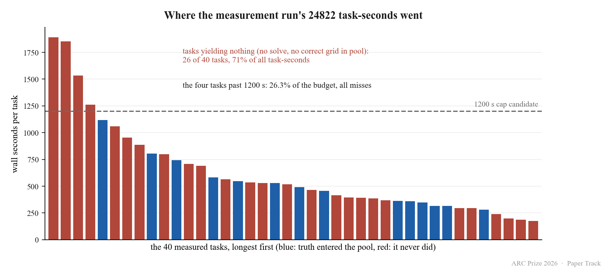
A cap at 1200 seconds therefore costs zero measured solves and frees about 7800 seconds per worker against a 42480-second wall, roughly eighteen percent. Decide-early, heavy-tailed, and with no usable progress signal is precisely the regime in which restart theory says a hard cutoff plus a fresh attempt dominates waiting, and Appendix F already derives the fixed-cutoff objective for exactly this queue. We derived the mathematics and never applied the policy, which is the same failure this paper records elsewhere in a different costume.
The proposal is to cap hard and spend the reclaimed time on a second independent adapter for tasks that missed, unioning the candidate pools. Seven thousand eight hundred seconds per worker buys roughly fifteen restarts each, sixty across the node, against about one hundred and fifty misses on a 240-task set. Whether that is worth anything depends entirely on one quantity we do not have: whether a second independent run fails the same tasks.
Here the pipeline turns out to forbid its own experiment. Every stochastic choice in the deployed solver is seeded by a constant: the adapter initialiser at 42, the trainer at 42, the training augmentation draw at 1, and the evaluation augmentation draw at 2. Rerunning a task therefore reproduces the same adapter bit for bit, and a restart in the naive sense returns the identical pool. The lever exists only if the training augmentation seed is varied, which changes which sixteen of the dihedral-and-colour permutation space the adapter ever sees, and that is a genuinely different training set for the same task. A determinism that reads as good hygiene is, for this purpose, the thing standing in the way.
We built the probe that answers it, and three details of its design are load-bearing. It trains the deployed configuration on the same task under different augmentation seeds and records, per test output, whether the truth is present in the decoded pool, so the comparison is union against single. Tasks are sampled stratified by their Kaggle outcome rather than taken in order, because of the first twenty tasks only four ever had the truth in the pool and fifteen are outright misses that cannot discriminate between seeds while still inflating the denominator; rates are reweighted back to the slice. The scope of any answer is narrower than the question sounds: the augmentation always applies all eight dihedral views and the seed selects only the colour permutation and example order, and we measured the resulting training sets to be almost disjoint as text, so a null licenses "colour permutation restarts do not help" and not "restarts do not help".
The third detail is a negative control, and it is not optional. The search admits a continuation on a hard threshold over half-precision logits, so a rounding difference at a borderline token prunes or admits an entire subtree and two runs of the same seed need not agree. We measured that noise directly: against a cache-free reference the decoder's scores agree only to about 2×10−3, which is the same order as the 0.0043-nat margin scale Section 5.7 measures for the selector itself. Without subtracting a same-seed replicate, "union exceeds single" would look positive whether or not seeds decorrelate, so the reported quantity is cross-seed disagreement minus replicate disagreement.
The answer is no, and the negative control is what makes that statement worth anything. Over 65 cells covering 19 tasks and 30 test outputs, the three seeds place the truth in the pool for 11, 17 and 15 outputs, and their union is 17. The union equals the best single seed exactly: seed two alone finds everything all three find together, and this held at every sample size we inspected as the run proceeded. Reweighted to the slice that is a 4.4-point apparent gain over the mean single seed, and reporting that number would have been the error the control exists to prevent. Rerunning the same seed disagrees with itself on 12.5% of outputs; different seeds disagree on 13.3%. The net is +0.008, which is indistinguishable from zero, so what the naive contrast measures is the decoder's own numerical nondeterminism and not any property of the training draw.
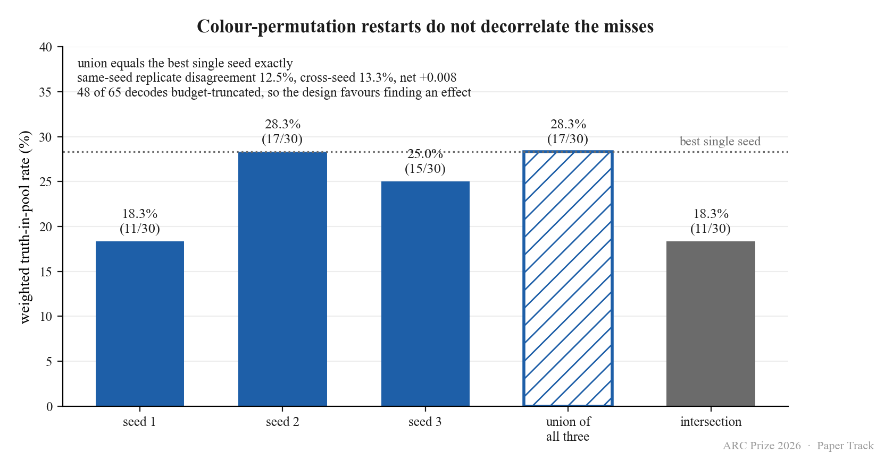
Two things make the null more credible than a null usually is. The bias in this design runs toward the hypothesis rather than away: 48 of 65 decodes were cut at their budget, so the probe is uniformly weaker than deployment, and decorrelation generically rises as success probability falls toward the noise floor. We failed to find an effect under conditions that would exaggerate one. And the sample was stratified precisely so the cells would land where seeds could differ, yet every hit lies in the reachable stratum, 17 of 21 outputs, with nothing at all from the nine outputs drawn from tasks the deployed run missed. The tasks a restart would need to rescue are not close to being rescued.
What this licenses is narrower than it sounds and we hold to the narrower claim. The augmentation always applies all eight dihedral views, so the seed re-rolls the colour permutation and the example order, and the finding is that re-rolling those does not change which tasks the adapter can reach. It does not establish that no restart of any kind helps. What it does establish is that the cheap version, the one the reclaimed cap could actually have paid for, does not, so the scheduling lever of this section is closed and the 65 percent of tasks that never produce the truth remain a property of the model rather than of the budget. Fidelity supports reading it that way: across the 19 shared tasks the probe's mean training loss tracks the deployed run's at a median ratio of 0.93, and the two agree on outcome for 15 of 19.
Building the probe also produced a result about our own instrument that we report because it nearly cost us the experiment. On the reproduction stack the model's tokenizer cannot represent the prompt format the model was trained on. It is a word-level vocabulary of sixteen tokens with no merges, and the entries for the two turn markers are unreachable: encoding the word for either returns nothing, and the user and assistant preambles encode identically. The completion-only loss mask keys on exactly those two ids to find the assistant spans, so every label was masked, the cross-entropy ran over zero targets and returned NaN, and the gradient norm was zero at every rank and optimizer we tried. Nothing raised. Left undetected it would have trained every adapter to NaN, decoded an empty pool for every task, and reported that seeds do not decorrelate, which is both the answer that ends the investigation and the answer we had no independent reason to doubt. The deployed runs do not have this defect, since the measurement run's recorded losses are finite and converged, which is what pins the intended tokenization and let us reconstruct it exactly.
Porting the deployed solver to a current software stack surfaced a portability result worth more than the probe, and we are careful below to say exactly how far it is established. The depth-first search recurses with a single key-value cache object and calls the model repeatedly inside a loop, passing that same cache each time. That is correct only if a forward pass leaves its input cache untouched, which was true of the legacy tuple interface the pipeline was written against, where the returned cache was a new object. Current library versions replaced it with cache objects that append in place. On those versions the second branch of every search node would continue from an already-extended cache, so positions advance past what the cache holds and the search explores from the wrong prefix. Restoring the original behaviour needs only a truncation back to the branch point before each call, after which the algorithm is unchanged, and that is what our port does.
The repair is now verified, though not in the way the first draft of this section claimed. We tested it by enumerating the search tree with the pruning threshold set so loose that nothing is ever discarded, under which the cached decoder and a cache-free reference that recomputes from scratch must agree exactly. They do: identical candidate sets, with scores matching to the numerical tolerance quoted above. The truncation also agrees with an independent implementation that slices the cache tensors directly and never calls the library's own truncation method. What we have not observed is the unpatched decoder failing on the deployed stack, since that stack pins the older interface, so the consequence of the dependency remains an inference from the interface change rather than a reproduction of the fault. We are explicit about that split because the alternative is the mistake of Section 4.1.1, where a plausible mechanism was fitted to an effect nobody had confirmed. What is solid is the dependency itself: the pipeline every entry in the thirty-point cluster is running relies on a deprecated interface contract, that reliance is invisible in the notebook, it produces no warning, and it is held in place only by the competition image's pinned versions. If that image moves, the failure is not a crash in the general case but a search proceeding from a corrupted prefix, which would surface as a quiet drop in solve rate that no log would explain. A dependency tree really can be worth points, which Section 4.1.1 claimed on bad evidence and withdrew. This is what a defensible version looks like, and it is offered as a specific mechanism with a stated failure mode, still awaiting its own control.
Every result above spends its adapter budget on the demonstration pairs. The test input grid is never a loss target, only a decode-time prompt, which means the largest single piece of task-specific information we hold is discarded before the first gradient step. Section 2 records that this is inherited from the ARChitects rather than chosen by us. Three published results suggest it might be expensive. CompressARC [16] reaches roughly 20% on ARC-AGI-1 evaluation by gradient-fitting a 76K-parameter network per task to compress that task's own grids, the test input included and only the answer withheld, with no pretraining at all, which is a floor on how much signal per-task grid structure carries by itself. The LongT5 system [7] gains 2.08 points from UL2 denoising of grid tokens, though offline and on demonstration grids. And the self-supervised test-time-training line [14, 15] is built entirely on adapting to the unlabeled test instance.
So we ran the composition: a masked-cell denoising objective on this task's test input, expressed inside the deployed prompt format so the existing collator supervises it unmodified, for a fixed number of steps before the ordinary demonstration objective. Corrupted grid in the user turn, clean grid in the assistant turn, cells dropped at 0.25 to a colour drawn from the task's own palette complement so the model is never asked to invent a colour the task does not use.
The third arm is the reason the experiment is worth running at all. A two-arm design cannot separate instance-specific grid fluency from the brute fact that the treated arm took more gradient steps than the control, and an unattributable positive is how three of this project's retracted explanations began. So the control arm denoises a different task's test input for the same number of steps on the same volume of data. If pre-fitting gains and the control does not, the effect follows the grid. If both gain, the honest finding is that more steps help and the interesting claim is dead.
We record the prior-art position before the outcome, because it does not depend on the outcome. The precise composition appears to be unclaimed, but the fair characterisation is adjacent-negative rather than unexplored. Akyürek et al. [13] defined the neighbouring objective, attributed it explicitly to the Sun et al. lineage, ablated it, and dropped it when it lost by 1.9 points; their loss targets were demonstration inputs of synthetic leave-one-out tasks rather than the real test input, and the ablation was on BIG-Bench Hard rather than ARC, but a reviewer will reach for it first and should. CompressARC establishes that fitting to the test input at test time works, as an entire from-scratch solver rather than as a warm-up. The two adjacent ARC-side measurements point opposite ways, which is the only reason the question is still live.
The three arms are on the card as this draft is compiled, at forty pre-fit steps over eight stratified tasks with a 900-second decode budget per cell, and the outcome is reported here whichever way it falls. Our own prediction, stated in advance so it can be scored, is a null: the demonstration inputs already carry the palette, the object vocabulary and the symmetry group of the test input by construction, so the marginal information in the test input is small, and the perceptual account of ARC failure that motivates the intervention is weakest exactly in our regime, since the 80% perception figure it rests on comes from vision models reading rendered images rather than from text-grid models with literal cell access.
The deployed decoder splits the sixteen evaluation views into batches of four and runs one depth-first search per batch. Nothing in the pipeline documents why the width is four, and on this card it is the single most expensive unexamined constant in the system.
Single-token decoding is bounded by streaming the weights out of memory rather than by arithmetic, so doubling the batch should be close to free. It is, right up until it is catastrophic. Timing each width in its own process, on prefixes drawn from real evaluation tasks:
| prefix tokens | width | per-step ms | peak reserved | |
|---|---|---|---|---|
| 1398 | 2 | 129.0 | 9.73 GB | |
| 1398 | 4 | 127.6 | 11.47 GB | free |
| 1642 | 2 | 131.3 | 10.27 GB | |
| 1642 | 4 | 130.2 | 12.68 GB | free |
| 1994 | 2 | 129.4 | 11.05 GB | |
| 1994 | 4 | 3253.4 | 14.23 GB | 25× |
| 2730 | 2 | 126.9 | 13.54 GB | |
| 2730 | 4 | 4104.5 | 19.22 GB | 32× |
First, the mechanism is memory and not computation. At 1398 and 1642 tokens the fourth lane costs nothing measurable, which is the bandwidth account behaving exactly as predicted. At 1994 and 2730 the same width costs twenty-five to thirty-two times more per step. Nothing about the arithmetic changed between those rows; what changed is that reserved memory crossed somewhere between 12.7 and 14.2 GB on a 16 GB card, after which the platform pages to host memory rather than failing.
Second, the majority of the evaluation set is on the wrong side of that threshold. Over 172 test outputs the prompt length has median 2198 tokens, first quartile 1610 and third quartile 3018. 57% of outputs exceed the shortest prefix at which width four collapsed, and 74% exceed the longest at which it was still free. So a single-card deployment of this configuration spends most of its decode budget running one to two orders of magnitude below the speed the same hardware delivers at half the width, and it does so on precisely the tasks with the most demonstration content.
This is the sharpest instance we have of the ceiling in the title, and it is not the one we expected to find. The wall is usually described as capacity, whether the model and its adapter fit. Here everything fits, the configuration runs to completion, and the cost appears entirely as throughput. Since the search is deadline-bounded in three places, a decode running twenty-five times slower does not merely take longer, it truncates earlier and the candidates it would have found never exist. Throughput is coverage, and this constant costs most of it.
The remedy is a two-line policy rather than a method change: choose the batch width from the prompt length so reserved memory stays under the cliff, which for this model means width four below roughly 1650 tokens and width two above it. It preserves the same thirty-two views and changes no score by construction, since lanes are independent and only the grouping differs.
Three honest limits on the claim, and the third bounds it hardest. The platform matters: this card runs Windows, where exceeding device memory pages silently to host rather than raising, so on Linux the same configuration would be expected to fail outright rather than degrade. The contest node's L4s carry 24 GB each, and extrapolating our peak-memory curve puts width four's cliff near 3200 prompt tokens there rather than 1650, roughly the top fifth of our prompt distribution instead of most of it. And the inference stack is not the same one: our probes run plain transformers with peft, because the deployed path uses Unsloth and Unsloth requires Triton, which has no native-Windows backend. The submitted notebook calls FastLanguageModel.for_inference, whose fused kernels and attention implementation are precisely what decides whether activation memory grows linearly or quadratically in prompt length. So the cliff we measure may be a property of our stack rather than of the pipeline, we cannot test the alternative on this hardware, and we make no claim about the deployed runs. What we do claim is narrower and still useful: the batch width is an undocumented constant, on a 16 GB Windows card with a stock stack it is the difference between 130 and 4100 milliseconds a step for most of the evaluation set, and anyone porting this pipeline to a single consumer card without Unsloth inherits that silently.
This section exists because the scattered negatives above are more useful collected than distributed, and because the most valuable thing a compute-poor entry can hand the next one is a map of where not to spend. Everything here is measured on this pipeline; none of it is argued.
The headline count. Forty levers were measured. None moved the hidden score. That is the finding, not an apology for one: a system whose remaining knobs are all worth less than its own measurement noise is at a ceiling, and the useful thing to publish is which knobs and why. The noise makes that sharper than it looks. At sd 1.34 the leaderboard cannot resolve anything below roughly four points without three runs per arm, and the largest coverage change any of these produced on a held-out slice is one output in fourteen, so the statement is partly about the levers and partly about the instrument. Two of the forty produced a genuine positive without moving coverage, task retrieval by demonstration embedding and warm-starting an adapter from a same-rule neighbour, and both sit upstream of the candidate pool; every lever that produced nothing at all sits downstream of it. Eleven of the closures required no GPU at all, and pricing an idea before building it is the cheapest discipline available in a compute-poor project. We adopted it far too late.
One number organises the map. Sixty-five percent of tasks never produce the correct grid under any of the sixteen augmented views, and they consume seventy-one percent of the budget doing it. When the truth does reach the candidate pool, the deployed selector places it in the top two essentially always, 18 of 18 on freshly generated tasks. The system is therefore generation-starved, not selection-starved or time-starved, and every closed lever below is closed because it operates downstream of generation on a pool that either already contains the answer or never will.
| lever | where | what closed it |
|---|---|---|
| Selection, downstream of a fixed pool | ||
| selector reweighting | offline | leave-one-task-out refit scores below the deployed selector |
| cell-wise voting | offline | 0 of 41 missing truths reconstructed; pool errors are correlated |
| second-model rescoring | offline | oracle gap 0 of 18 on fresh tasks; nothing to fuse |
| any belief-only selector | proof | bounded by top-two posterior mass |
| Search, over a fixed adapter | ||
| best-first enumeration | offline | median 2.9% saving over 16 logged trees, 30,480 passes |
| augmentation-seed restarts | offline | union of three seeds equals the best single seed exactly |
| invariant mining as a filter | offline | 0 recovered, kills 11 of 19 truths |
| per-task cap at 1200s | hidden | 29.31, inside noise; prediction unsupported |
| Adaptation | ||
| adapter rank and depth | offline | inverted U; the shipped configuration sits on its peak |
| pre-fitting on the test input | offline | 7 / 7 / 6 across base, treated, control; nothing moved |
| leave-one-demo subset adapters | offline | +0 coverage over 20 outputs |
| continued fine-tuning of the base | offline | honest negative; bimodality unmoved |
| refinement loops | offline | no partial-credit middle for a loop to grip |
| Program synthesis | ||
| 1.5B DSL proposer | offline | 0 of 101; could not express the transforms |
| 14B coder, zero-shot | offline | 0 of 120 on the full set, median per-cell lift over identity +0.000 |
| 14B reasoner | offline | 0 of 12 bounded, empty near-miss band |
| symbolic object-count prune | both | 27.92 hidden; offline, a predicted oracle is not accurate enough |
Seven architectural constraints, and which of them we actually probed.
What we would tell the next entrant to try. Two surfaces have a plausible mechanism, no measurement against them, and no published work claiming them. First, cross-task transfer at test time: the pipeline fits and discards 240 adapters, and nothing has been tried on initialising one from a bank of previously fitted ones, from a nearest neighbour by demonstration similarity, or from any meta-initialisation. Every closure in the table above is about a single task in isolation. Second, the augmentation space itself: the sixteen views are the object every downstream stage consumes, and widening or re-choosing them acts directly on generation, which is the only starved stage. Both act upstream of the pool rather than on it, which is what distinguishes them from everything the table closes.
The most informative negative in this paper: an idea that worked and lost anyway. Every proposal in the loss-shaping family shares one premise, that gradient spent reproducing cells the rule does not touch is waste. Among the 67.5% of evaluation tasks that preserve grid shape, 88% of a median output is a verbatim copy of its input, so the premise is quantitatively attractive, and masking the loss on those positions assumes nothing about which colour is background, which matters because colour 0 has a median share of zero in these grids. We ran it with three arms at an identical step budget: the deployed objective, the masked objective, and a control masking an equal number of randomly chosen supervised positions.
| arm | truth in pool | candidates | error, copied cells | error, changed cells |
|---|---|---|---|---|
| deployed objective | 6 / 14 | 48 | 0.024 | 0.286 |
| mask unchanged cells | 3 / 14 | 39 | 0.095 | 0.062 |
| mask an equal random set | 6 / 14 | 44 | 0.021 | 0.146 |
The intervention did exactly what it was designed to do, cutting the error on the cells the rule actually changes by a factor of 4.6, the largest movement any lever in this paper produced on any quantity. And it lost, because it broke the other half: error on the cells that should have been copied rose fourfold, and when 88% of a grid is a copy, a model that transforms correctly and mis-copies one cell in ten submits a wrong grid. The control is what turns this from a suggestive null into an explanation. Masking the same number of positions at random is indistinguishable from the deployed objective, tied on all eight tasks, so the loss is not caused by having less supervision or by a smaller effective learning rate. It is caused specifically by removing all supervision on copying. The premise underneath the whole family is false in an interesting way: the gradient spent on unchanged cells is the load-bearing half, and the transformation the task is nominally about can be improved several-fold while the answer gets worse. The coverage drop is three tasks of eight, which a sign test alone would not call; the cell-level split is thousands of cells and is not close.
The 2025 winning recipe survives a single 16 GB consumer GPU, but only after the inference engine is fixed. That one change is worth more than every other knob, and it is what makes per-task TTT tractable through an adapter-serving bridge. The honest result is a 12.79% no-TTT baseline and a 16.28% regularized-TTT blend on the public evaluation, 13.61% and then 18.19% on the hidden leaderboard as the per-task training deepened, with the gains bounded by adapter overfitting and by a VRAM wall on large grids that later proved to be partly a context-truncation artifact rather than a true limit. Against that single-card ceiling we set one measurement from above. A faithful reproduction of a public pipeline that one 16 GB card can hold but not serve in budget, run on the contest's own four-L4 node and repaired of two defects its community port had introduced, scores 30.97% on the same hidden set. That result is not ours and not single-card, and its value here is that it prices the constraint at roughly twelve points instead of leaving it an open question.
The lessons that generalize are about measurement rather than about ARC, and the largest one is the error bar. Twelve executions of a single unchanged Kaggle kernel version span 4.17 points with a standard deviation of 1.34, a twenty-second of the score itself, and every build we called a regression sits inside 1.5 of them. We report a ledger of forty measured levers that moved nothing, and the honest reading is not that nothing helps but that a programme of single-submission A/B tests was never capable of the discrimination it claimed. Beyond that: public-eval gains must be re-validated in the deployed condition, since every public-validated candidate lever we submitted regressed on the hidden set, and the one class that did transfer was repair rather than tuning. A score displayed beside a public notebook is not a measurement of the code published there, and treating it as one cost us a week and three quantified explanations of a gap that a single control retired in one submission. A family of rules is a multiplicity, so a sweep of sixteen selectors is nearly certain to produce a winner by chance, and in our case the pool's dominance structure refuted the whole family before any of it ran. And an effect measured against a hard threshold over low-precision arithmetic needs a same-seed replicate before it means anything, since ours produced an apparent 4.4-point gain that was entirely the decoder disagreeing with itself. Each of those cost real compute to learn and none of them is specific to this benchmark.
What we could not move is the part that was never about scheduling or ranking. Across the levers we closed, the residual is that most tasks never produce the correct grid at all, which is a property of a 4B model rather than of the twelve-hour budget, and the honest next step is a stronger base rather than another pass over the same candidates. Those bounds belong to one small card, not to the task. The contest gives four L4 GPUs and 96 GB, where the offline frontier now leads near 66%, and the verifier, the TTT bridge, and the selection rule we built are the pieces we would carry onto that hardware, with the scaling case stated as a falsifiable hypothesis rather than a promise (Section 5.4). The 16 GB card is where the climb starts, not where it ends, and the number beneath it keeps moving. The full system is open source, the GGUF conversion recipe for the custom-vocabulary model, the AIRV pipeline, the per-task TTT bridge and sweep harness, and a development log recording every measurement and dead end behind these numbers.
Environment. A single NVIDIA RTX 5070 Ti (16 GB, Blackwell, ≈896 GB/s), native Windows 11. For inference, a prebuilt llama.cpp CUDA 12.4 llama-server, run on Blackwell through PTX JIT. For training, PyTorch with a LoRA via PEFT, bf16 base, gradient checkpointing. The two frameworks are never co-resident in VRAM (Section 3.4).
The two GGUF converter patches. The NVARC model has a 16-token WordLevel tokenizer, which trips the stock converter twice. (1) Unknown tokenizer hash: the loader does not recognize the tokenizer's hash and refuses to guess a pre-tokenizer. Its pre-tokenizer is in fact the qwen2 regex, so we map the hash to qwen2 explicitly. (2) Empty merge list: a WordLevel tokenizer has no byte-pair merges, but the loader requires a non-empty list, so we add two throwaway merges among the role tokens, which never fire on grid text. Both patches are in the repository's conversion script and are applied automatically by the Kaggle prep notebook.
Serving flags. llama-server is launched with full GPU offload (-ngl 99), a 16,384-token context, a single slot (-np 1), and the prompt cache disabled (--no-cache-prompt). Its own logs are redirected to a file so they never flood the notebook. Decoding is greedy (temperature 0) with n_predict sized to the target grid.
Hyperparameters. AIRV uses the eight D4 augmentations and votes to two attempts. Per-task TTT (regularized): rank 16 to 32, dropout 0.05 to 0.1, 8 to 20 steps, AdamW, a fresh random augmentation per step, leave-one-out target, context capped at ≈1,600 tokens, applied at adapter scale 1.25 at inference. Exact values per experiment are in the development log.
Per-scale accuracy (84 trainable tasks). Table 8 gives the full adapter-scale sweep behind Figures 5 and 6. Accuracy rises to a peak at scale 1.25 and then declines, the signature of an adapter applied too strongly.
| adapter scale | no-TTT | 0.50 | 0.70 | 0.85 | 1.00 | 1.25 | 1.40 | 1.50 | 1.75 |
|---|---|---|---|---|---|---|---|---|---|
| accuracy (%) | 12.8 | 12.0 | 12.8 | 15.2 | 16.8 | 17.6 | 16.0 | 16.8 | 16.8 |
Paired significance. On the 84 trainable tasks, TTT and no-TTT disagree on seven test outputs. TTT is correct on six that no-TTT misses and incorrect on one that no-TTT gets. An exact two-sided McNemar test on a 6/1 split gives p ≈ 0.13, so the lift is not individually significant. We report it as directional, corroborated by the configuration sweep (+1) and the representativeness check (no-TTT scores 12.8% on the subset versus 12.79% on the full set).
Colour permutation. Adding a random colour permutation to the augmentation set lifts the no-TTT baseline from 12.8% to 14.4% on the 84 tasks, but provides no further gain on top of the per-task adapter, which has already learned the task's colour mapping, so the two do not stack.
Deep test-time training and the training context. The configuration sweep in Table 2 conflated two variables. Its deeper cell ran 40 steps at rank 32 with no dropout and its shallow cell 20 steps at rank 16 with dropout, so more steps was only ever measured with the regularizer removed. The table below separates them on all 84 trainable tasks, trained at the 2000-token context the submitted system uses. Depth alone does nothing. Sixty steps at rank 16 with dropout ties the twenty-step baseline at 24 of 125. Adding capacity while keeping the regularizer on is what moves the number. Sixty steps at rank 32 reaches 27 of 125, the best trainable-task result we have measured, and it prefers the same 1.25 inference scale. The honest caveat is variance. Two seeds of the baseline configuration score 24 and 22, so a single output sits inside the noise, and the deep result rests on one seed. A second seed is the confirmation and its verdict is in the status below. The same sweep isolates the training context as a real knob. The baseline trained at 1600 tokens scores 16.0% against 19.2% at 2000, a three-point gap wider than the seed noise. This reconciles a measurement detail. The trainable-task figure in Section 4.3 and the blend it feeds were measured at the 1600-token context of the sweep harness, while every submission from v2 on trains at 2000, so those reported numbers describe a lighter configuration than the leaderboard one and are a conservative floor for it.
| configuration | steps | rank | scale | context | correct/125 (%) |
|---|---|---|---|---|---|
| baseline (v2.1 config) | 20 | 16 | 1.25 | 2000 | 24 (19.2) |
| baseline, seed 1 | 20 | 16 | 1.25 | 2000 | 22 (17.6) |
| deep | 60 | 16 | 1.25 | 2000 | 24 (19.2) |
| deep | 60 | 16 | 1.00 | 2000 | 23 (18.4) |
| deep + rank | 60 | 32 | 1.25 | 2000 | 27 (21.6) |
| deep + rank | 60 | 32 | 1.00 | 2000 | 25 (20.0) |
| deep + rank | 60 | 64 | 1.25 | 2000 | 28 (22.4) |
| deep + rank | 60 | 128 | 1.25 | 2000 | 24 (19.2) |
| baseline, short context | 20 | 16 | 1.25 | 1600 | 20 (16.0) |
Status. Confirmed. A second seed of the rank-32 deep configuration scores 26 of 125 and the first scored 27, while the two baseline seeds score 24 and 22, so the two configurations separate with no overlap and the roughly three-output lift is a real effect rather than a seed draw. This is the first configuration we have measured that beats the shipped operating point on the mechanism that works, per-task training itself, rather than on the candidate-and-voting side where five submissions regressed. It cleared it. Shipped as v6.1 with the deep-regularized adapter trained on all 232 tasks, it scored 18.19% on the hidden set, a 4.58-point gain over v2.1's 13.61% and the first submission to beat the shipped operating point (Table 2). The transfer held because this lever improves the adapter rather than diluting the vote, so the local sweep lift predicted a real hidden gain rather than the public-to-hidden reversal that sank the candidate-side levers. An intermediate v6 scored 12.36% as the same recipe starved by a disk-exhaustion bug that left 73 tasks without an adapter, and fixing the scratch path recovered the lift. The rank dimension is now swept to its ceiling. At the same 60 steps, rank 64 scores 28 of 125 against rank 32's 27, one output and inside seed noise at double the adapter cost, and rank 128 falls to 24, an inverted U whose mechanism is the per-task adapter overfitting its tiny few-shot dataset once capacity outruns the signal. The shipped configuration sits at the peak of its own curve, so the depth-and-rank lever is closed at 18.19% and further climb on this pipeline must come from elsewhere. That closure had a built artifact attached to it. A rank-128 submission had already been assembled from the v6 recipe on an early partial reading that higher rank helped the vote, and it was retired without ever being submitted once the full sweep placed rank 128 joint-last, below the rank 32 it forked from. Rank 64 leads rank 32 by a single output out of 125, which is inside seed noise at twice the adapter cost, so no rank on the curve justifies a submission. The build is archived in the repository rather than deleted, because the episode is one of the paper's arguments made prospectively rather than in hindsight. Every candidate-side lever we submitted on a partial reading regressed on the hidden set. This one failed its validation first and cost a rig afternoon instead of a submission slot.
We record the failures explicitly, because on this hardware they are most of the work.
torch.compile would close the gap, but it needs Triton, which has no native-Windows backend. The resolution was to change engines, not to optimize the eager path.llama-server path used for scoring, with a hard per-request cap, a heartbeat file, and per-task checkpoints, removed the stalls and made the runs resumable. The engine was the bottleneck for validation just as for inference.The model's 16-token vocabulary is given in Table 10. A grid is serialized row by row, one token per cell (the token id equals the colour), rows separated by the newline token. Prompts are assembled at the id level as a ChatML few-shot sequence of train pairs followed by the test input, ending at the ASSISTANT turn for the model to complete. Because the role and special tokens have no textual spelling, the whole sequence is built from ids directly, never by tokenizing a string, which is what guarantees parity between training and inference.
| token ids | meaning |
|---|---|
| 0 to 9 | the ten ARC grid colours (id = colour) |
| 10 | newline / row separator |
| 11 | USER role marker |
| 12 | ASSISTANT role marker |
| 13 | PAD |
| 14 | IM_START |
| 15 | IM_END |
The base model is Qwen3-4B [5] (Apache-2.0), supervised-fine-tuned on ARC grids by NVARC [4]. Any derived weights we redistribute are released under Apache-2.0 with the required NOTICE. Evaluation and training tasks are the official ARC-AGI-2 corpus [2] (Apache-2.0). The fine-tune probe additionally uses RE-ARC [6] (MIT). Our own code and weights are released under MIT-0. We never train on the evaluation tasks. Full license texts and attribution are in the repository's THIRD_PARTY_LICENSES.md and NOTICE.
BibTeX.
The competition's numbers are statistics over a small finite task set, and several of this work's wrong turns trace to reading them with more resolution than they possess. This appendix collects the formal content behind the rules the body applies, what a leaderboard point is, what a paired comparison can resolve, why a candidate pool cannot rank its own truth, and what the time budget actually optimizes. Everything here is elementary. The value is that each statement is attached to a measurement from the body, so the arithmetic and the project's history check each other.
Task i has ni test outputs, the submission supplies two attempts per output, and a task contributes one credit split evenly across its outputs,
On the hidden set N = 240, so one credit is 100/240 ≈ 0.4167 percentage points, the quantum the leaderboard moves in. The public-notebook clusters sit at 31.39, 31.81, 32.22 and 32.64, spaced 0.41 to 0.42 apart, which is that quantum observed directly, whole boards separated by single tasks. The measure also carries a quiet bias. A solved output on a two-output task earns half what it earns on a single-output task, so any method that helps preferentially on multi-output tasks is systematically underpaid by the metric.
Two variants scored on the same tasks form a paired design, and the pairing removes the between-task difficulty variance entirely. Concordant tasks, solved by both or missed by both, carry no information about the difference. Writing b for tasks that flip miss to hit and c for the reverse, the null hypothesis of no difference makes the flips exchangeable, b ~ Binomial(b+c, ½), and the exact two-sided McNemar test in the cleanest case, every discordant task falling the same way, gives
Six unanimous flips are therefore the minimum resolvable effect at the five percent level, p = 2/64 = 0.031, while five give 0.0625 and fail. Every candidate-side lever this work measured moved one to three tasks. Such effects are not weakly supported, they are unresolvable by any single read of a board this size. The body's episodes are this bound observed. The regularized-TTT comparison of Section 4.3, six flips against one across seven discordant tasks, gives exactly 2 · 8/128 = 0.125, the p ≈ 0.13 reported there. The selector switch shipped on three unanimous flips, p = 0.25 two-sided, and reversed on the full sample. And the accidental repeat run, two submissions of one build, differed by 0.41 points, one quantum, which we read as the empirical noise floor agreeing with the formal one. It was not. Five further runs of that same build put the empirical spread at ten quanta, so the formal bound derived here is the optimistic case and the observed instrument is worse. Figure 8 places the episodes on the bound.
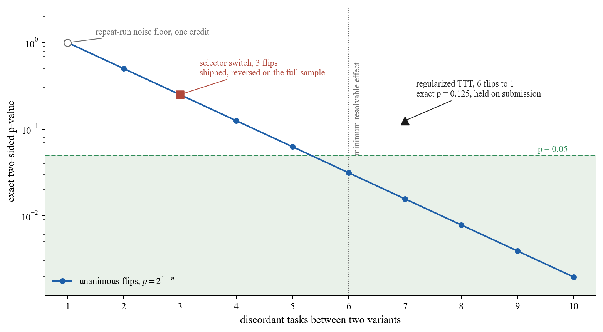
The selection sweep of Section 5.7 scored sixteen rules against one pool. If each rule independently had probability α of a spurious win, the chance that at least one wins is 1 − (1 − α)16, which at α = 0.05 is 1 − 0.9516 ≈ 0.56. The sixteen rules share the pool, so the tests are positively correlated and the true figure is smaller, but the reading survives the correction. The sweep's observed yield, exactly one rule gaining exactly one output, is what chance predicts from a search of that size over a null family, and that is why the winning rule was recorded rather than deployed.
Model the pipeline as inducing, for each test output, a distribution q over grids, the composition of the adapted model, its sixteen augmented views, and the depth-first search. The pool is the sampled support of q, and every statistic the pool records for a distinct grid c is an estimate of a functional of q. The multiplicity m(c) counts the augmented decodes that produced c. Each decode g carries a beam score, the negative log-probability of its search path, and augmentation scores, per-view negative log-likelihoods of c under fresh augmentations. Both deployed selectors are monotone functions of these statistics,
where Gc is the multiset of decodes yielding c. Call Σmono the class of selectors nondecreasing in m and nonincreasing in every recorded NLL. Both of (6) are members, as are all sixteen swept rules.
Proposition. If a wrong grid g Pareto-dominates the true grid y★ in the recorded statistics, meaning m(g) ≥ m(y★) and every NLL statistic of g is at most the corresponding statistic of y★, with at least one comparison strict, then every selector in Σmono ranks g at or above y★. Proof. Immediate from monotonicity in each coordinate. □
The proposition is trivial. Its content is the premise, which is a measurable property of real pools, and it holds. On every one of the four leaked outputs of Table 6 the true grid is strictly Pareto-dominated inside its own pool, checked on multiplicity, mean augmentation NLL and best beam NLL, by one wrong candidate on two of the outputs, by two on a third, and by three on the fourth. No monotone selector can recover any of the four, so the sixteen-rule sweep was not sixteen independent failures, it was one proposition observed sixteen times. Figure 9 draws the premise.
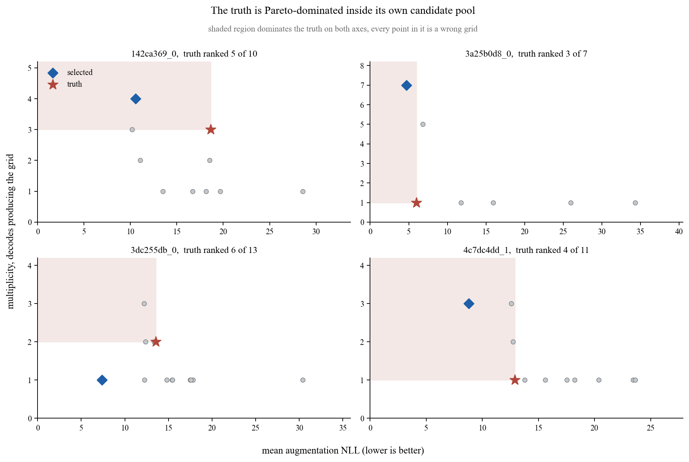
3dc255db_0 it wins through the likelihood term alone, but a dominator exists in every pool, and with the beam statistic included the domination is strict on all four, which is the premise of the proposition.The dominance counts carry one more consequence, elementary enough to state in two sentences. A selector in Σmono that is strictly monotone in some coordinate where a dominator strictly leads places that dominator strictly above the truth, so a truth with k such dominators ranks at worst k+1, and two dominators already exclude it from any two-attempt selection. Both deployed selectors are strictly monotone in the coordinates that matter here, and the measured counts, one, one, three and two, hold simultaneously in the summary statistics and in the exact addends of (6), checked directly on the pool. The consequence splits the leak. 3dc255db_0 and 4c7dc4dd_1, together worth 1.5 credits, are unreachable by the entire monotone class in either attempt slot, while the two singly-dominated outputs are reachable only at rank two and only by rules constructed after seeing the answer, which the multiplicity argument of F.3 forbids. So the class ceiling on this pool lies between the attained 9.833 and 10.833 credits, against the present-in-pool 12.333, and sixty percent of the leak is closed by proof rather than by sweep.
Dominance is what the failure mode predicts rather than an accident. When the model internalizes a wrong rule, q concentrates on grids consistent with that rule, and the truth enters the pool only as a low-mass fluctuation, which is precisely low multiplicity and high NLL, that is, dominance. The same concentration defeats aggregation at cell level. Treating candidates as draws from q, if the marginal of q at a given cell places most of its mass on a wrong colour, a per-cell majority vote converges to that wrong colour, amplifying the marginal rather than correcting it. The body measured exactly this, thirteen same-shape candidates fusing to a grid wrong in the same two cells the selected answer gets wrong.
The census of Figure 9a completes the pool's accounting and adds two measurements made after the theorem was proved. Counting Pareto dominators over the recorded summary statistics alone, only one leaked output is blocked for every monotone rule and the bound reads 18 of 60; the exact-addend analysis above is stricter, excluding a second output and giving 17. Either way two to three outputs of headroom exist inside the theorem, and the first measurement is that they are not learnable: refitting the selector weights over multiplicity, augmentation and beam terms with leave-one-task-out validation attains 14 against the deployed 15, one output worse, against a pre-registered bar of plus two. With four leaked outputs in sixty, weight tuning memorises them, so the headroom is real but unreachable from data of this size, and the practical ceiling is the deployed selector's. The second measurement is the shape of what the pool misses. Of the 41 truth-absent outputs, one sits a single cell from a pool candidate and six more within three cells, but the pool's errors are correlated through the model's beliefs, weighted cell-wise voting reconstructs none of the 41 under any of three weightings, so the near-misses are not recoverable by aggregation, and the six outputs where no candidate even has the right shape are beyond every selection-side idea entirely.
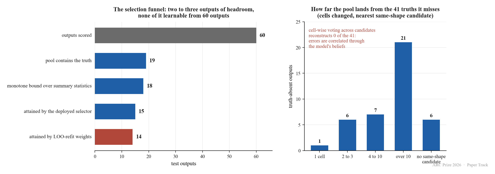
An escape therefore needs information not derived from q. The round-trip score of Section 5.7 has the right form, injecting a candidate as a synthetic demonstration and measuring the mean change in per-token negative log-likelihood of each held-out real demonstration,
with D the demonstration pairs and x★ the test input. It failed in an instructive direction. The measured Δ tracks the description length of c rather than its truth, a simple low-entropy grid perturbs the conditional barely at all, so −Δ behaves as a smoothness prior, which is once again a functional of the model's beliefs. The section's conclusion restated formally, the leak is not a ranking deficiency inside Σmono, it is q itself pointing at the wrong grid, and a repair must move q, which is training, not selection. Figure 10 shows the escape attempt's margins.
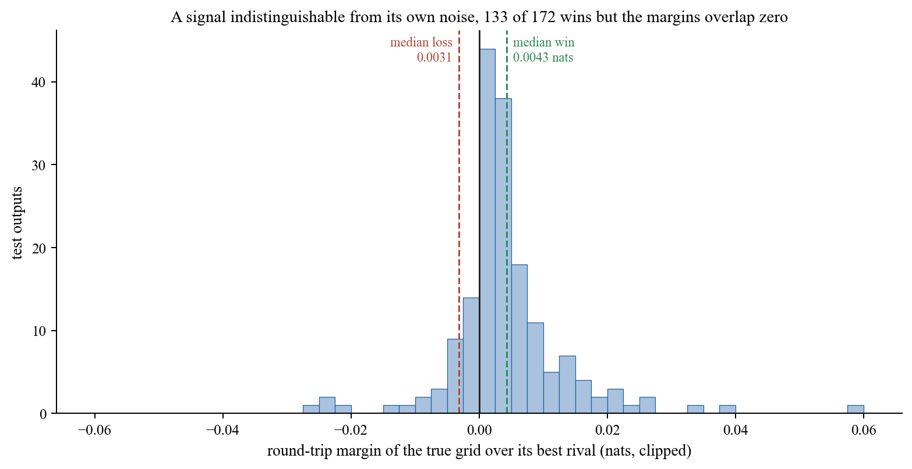
The negative extends from the monotone class to everything the pipeline can compute about itself. Model the task as a rule θ drawn from a prior, with truth Y★ = gθ(x★), and let q stand for the trained model's entire belief state on the task, of which the sampling distribution over grids is the visible part. Let W collect everything the pipeline computes internally, the pool, its statistics, and any negative log-likelihood the model can be asked to evaluate. Two assumptions. The pool is exchangeable given q, which is how it is generated. And the internal-channel assumption, Y★ ⊥ W | q, the internal data reads the task only through the model's beliefs. The second is the load-bearing idealization, and everything below is conditional on it.
Theorem (internal ceiling). Under the two assumptions, every two-attempt rule σ that is a function of W satisfies
the expected top-two mass of the posterior given the model's beliefs. Proof. Tower over (W, q), note σ(W) is fixed given W, replace P(Y★ = c | W, q) by P(Y★ = c | q) using the independence, and bound the resulting two-term sum by the best two-term sum pointwise. □
Equality needs the top-two set of the q-posterior to be recoverable from W, which holds approximately once the pool is large. The reading is Blackwell's, the map from q to W is a garbling, and no processing of a garbled channel creates information about a variable the channel never saw. Two corollaries follow. The round-trip score of equation (7) is built entirely from model likelihoods, so Δ is a function of W and the theorem bounds it, which retires that family at theorem level rather than experiment level and explains the measurement, the signal collapsed into a functional of the model's beliefs because it never had anything else to be. And the escape routes are exactly the channels that break the assumption, executing a candidate program against the demonstrations, or scoring under a second independently trained model, both of which read the task through something other than q.
We tested the second escape in the strongest form available offline and it did not pay. Every one of the 432 candidates in the dumped pool was rescored under the un-adapted base, which shares weights with the deployed model but not beliefs, having never seen the sixteen task-specific augmentations the adapter trained on. Against the deployed selector's 15 of 60 outputs with the truth in the top two, that likelihood scores 12 alone, 15 when added to the deployed score, and 14 when combined with multiplicity: no combination we tried recovers a single additional output, and the correct-in-pool total it is competing for is 19. The reading is not that a second opinion is worthless in general but that these particular dominators are not an artifact of the adapter. A belief state that never saw this task's augmentations ranks them above the truth as well, so the domination is a property of the candidates rather than of the training, and the cheap reason to expect a second model to help is gone.
We then ran the version the theorem actually names, rescoring the same pool under the separately trained 2B sibling of our base, and it appeared to work spectacularly. Its likelihood alone places the truth in the top two for 19 of 60 outputs against the deployed selector's 15, and 19 is exactly the number of outputs whose pool contains a correct grid at all. A perfect score against the reachable ceiling is not a result, it is a symptom, and the check took five minutes. That model assigns the correct grid a median per-token loss of 0.0002, and it prefers the true grid over every decoded alternative on 54 of 60 outputs including 40 of the 41 where the correct grid never entered the pool at all. It is not ranking candidates. It has memorized the public evaluation set, and a model that has memorized an answer scores it highly whether or not it could ever produce it.
A likelihood alone cannot separate memorisation from capability, since a genuinely strong model also assigns low loss, so we built the audit the claim actually requires and pre-registered the gates that could kill it. First the encoding was proved exact, the scored token ids decode back to the true grids on all 172 outputs under both tokenizers with zero mismatches, so the likelihoods are computed on the truth rather than on an artifact of a sixteen-token tokenizer that had already produced one silent zero-supervision bug. Then the likelihood was made to predict something falsifiable. A model at 0.0002 nats per token must be able to produce these answers outright, so both models greedy-decoded the public evaluation set with no test-time training and no search, and the prediction held, the 2B reproduces 80% of the answers exactly (48 of 60) where the 4B manages 10%. The decisive arm is fresh data. RE-ARC ships the generators and verifiers for the ARC-1 concepts, so we minted 120 instances under our own seed on 1 August 2026, each instance checked by RE-ARC's own verifier, giving a column that provably postdates every published checkpoint. On that column the ordering reverts to what capability predicts, the 4B at 78.3% against the 2B's 65.0%. The interaction is +83.3 points with z = 8.0 (Figure 10a). A 2B does not beat a 4B from the same author eight-fold on the harder published set while losing to it on easier fresh data. The narrow claim, and the only one the evidence licenses, is that the public evaluation set is not a valid measurement instrument for this checkpoint. Nothing here speaks to intent, training on the public split is standard practice in a competition scored on a private one; the finding is about what the artifact can measure, not about the conduct of its author.
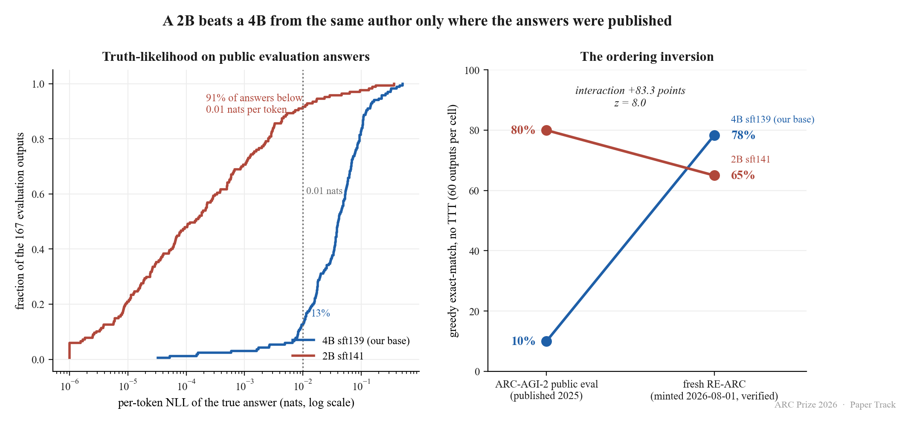
The audit reshapes the escape-route ledger rather than closing it. The un-adapted base fails as a second opinion by agreeing with the dominators, and the 2B's apparent 19-of-19 was recall, so no validated second-model gain exists. But the fresh column also shows the 2B is a genuinely capable model, 65% on data it cannot have seen, whose defect is specific to the published split. On the hidden set, which neither model can have memorised, rescoring under it remains a legitimate and untested instance of the channel the theorem names; what died was our means of validating it offline on public data, not the mechanism. The other named escape, executing task-side structure against the demonstrations, has now been run on the hidden set for the first time in any configuration of this pipeline. v7.5a restored the symbolic arm's object-count signal as a pure re-ranking prune, adding 0.5 to a beam's score per unit of disagreement with the predicted component count, and scored 27.92 against the 30.56 to 30.97 same-configuration band, a loss of 6.3 task credits against the lowest baseline run, eleven standard deviations of the measured run noise. The theorem is not touched, but its escape clause acquires a measured precondition: a task-side oracle only lifts the bound if it is more accurate than the model's own beliefs about the same property, and this one, which returns a count on every branch including its no-rule fallback, is not. A noisy oracle is strictly worse than none, because the bound it escapes is lower than the penalty it inflicts.
The contamination finding carries one further caution for anyone building on these artifacts. Any measurement that uses that checkpoint to score, filter or validate against public ARC-AGI-2 evaluation tasks will be inflated, and the inflation is invisible unless absolute likelihoods are inspected or fresh data is minted. We report it because the published model card does not, and because a 19-of-19 result is exactly the kind of number this paper has already been fooled by once. The instrument generalises beyond this case, establish a capability ordering on data generated after publication, measure the same models on the suspect set, and read contamination off the interaction; it needs no access to training data, no private split, and no cooperation from the model's author. It has a place in a literature. Performance-based contamination testing exists in general form (ConStat), and regenerating a benchmark from scratch to measure the drop was done for grade-school arithmetic (GSM1k); the field's own 2025 technical report names the ARC version of the problem, “knowledge overfitting”, and states explicitly that it does not quantify it. The ordering inversion on generator-fresh instances is, to our knowledge, the first instrument that quantifies it for ARC checkpoints, and the generator that makes the fresh column possible ships with the benchmark's own ecosystem (RE-ARC).
Identifiability closes the pool-only question from below. The pool is exchangeable given q, so its law depends on the draws only through the recorded multiset, the empirical measure is sufficient, and the best pool-only rule is a function of it. If two rules θ0 ≠ θ1 induce the same q but different truths, the pool laws coincide and the posterior odds equal the prior odds, the pool contributes nothing toward telling the truths apart. A quantitative form needs three hypotheses rather than two, since with two confusable truths a two-attempt rule submits both and never errs. Take three rules with pairwise distinct truths whose pool laws sit within total variation η of a common anchor. Any two-attempt rule misses at least one of the three truths pointwise, so the three error probabilities sum to at least 1 − 2η, and the worst-case error of any pool-only rule is at least (1 − 2η)/3, approaching one third as the profiles coincide. The three outputs whose truth was decoded exactly once are the natural place to hunt for such triples. Published separations sharpen the margins. With Δgap the gap between the truth's mass and the best wrong mass, majority-style selection needs order 1/Δgap2 samples and best-of-n order 1/Δgap, and a nonpositive gap, the measured case here, defeats every sample size [9], while coverage-style analyses tie the value of any inference-time selection to the policy's mass on the truth [10].
What survives for practice is an estimator design, stated as a proposition. To first order the round trip decomposes as Δ(c) = αK(c) + βR(c) + ε, a description-length term, a rule-consistency term, and noise, and the measured pathology is the first term dominating. Let π scramble the test input by a fixed cell permutation, preserving the candidate, its size and its palette while destroying the spatial link between input and candidate.
Proposition (control variate).
the complexity term cancels to first order, and detecting a mean effect βR at z standard errors needs F ≥ (zσ/βR)2 held-out folds, with the measured margin scale of 0.0043 nats setting the bar. The ceiling still applies, the debiased score is built from model likelihoods, so at best it recovers the consistency component the recorded statistics discard and cannot exceed (8). Any deployment claim passes through the discipline of F.2 and F.3, stated before testing, validated on a disjoint pool.
Let pi(t) be the probability task i is solved when given t seconds, and let T be the wall. The allocation problem is to maximize Σi pi(ti) subject to Σi ti ≤ T. For concave increasing pi the Karush-Kuhn-Tucker conditions give water-filling, pi′(ti) = λ on every task receiving time and pi′(0) ≤ λ on the rest, marginal solve probability per second equalized. The measured behaviour of this pipeline is closer to a step. A task completes its search at a natural time τi or fails regardless, which turns the allocation into a 0/1 knapsack over (si, τi). Since τi is unknown until the task is run, the implementable policy is a uniform cap C, and under sequential processing against the wall the outcome is
Raising C weakly raises every surviving term and weakly lowers k(C), and each task beyond k(C) contributes zero, so S(C) is in general non-monotone and its maximizer can be interior. When the wall never binds, larger C is weakly better, which is why a 120-task public run cannot exhibit the effect while a 240-task hidden run can, and why the public and hidden reads of a cap change may legitimately disagree. The measured inputs are a τ range of 174 to 1889 seconds on the 40-task slice, a deployed cap of 1800 on every submission through the wiring fault of Section 4.1. The strongest public build was believed to run 1200, which is what made the cap the leading candidate for the gap; it forks a source that hardcodes 1800, so both sides ran the same cap and the candidate is withdrawn. The model below stands as mathematics and is reported because the cap remains a real lever on a 240-task queue, not because any measured gap is now attributed to it. Whether the wall binds on the hidden set is not observable from outside, the model predicts sensitivity to C exactly when Σi min(τi, C) approaches T. The submission built to decide it did not. It moved the cap from 1800 to 1200 and lost 1.53 points, four credits against a one-credit noise floor, which reads as a violation of the flat-plateau prediction until one notices that the same run also executed 24 unbudgeted greedy fills through a gate that treated the string "0" as true. Two factors moved, so the experiment is void rather than adverse, and the prediction stands untested. We report it as void because a confounded run that happens to point the way our model does not is exactly the run one is tempted to quietly keep. One operational corollary came from the same smoke that validated the cap. Any work placed after the capped loop re-enters as unaccounted growth in τi, the greedy fallback measured about 80 seconds per fill past the cap, so post-loop work must carry a budget of its own. Figure 11 draws the model against the measured timings.
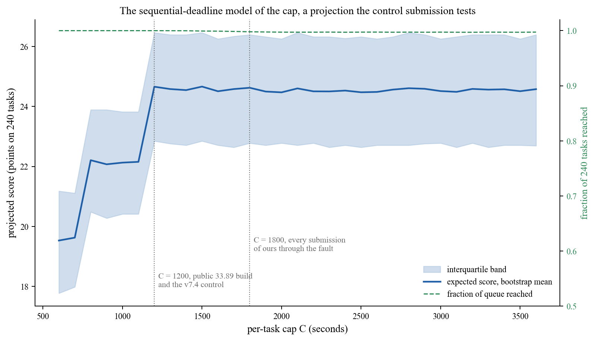
The model has a closed form worth recording, because it turns the cap from a swept knob into a solved problem given one estimable distribution. Write F for the distribution of the natural time τ, F̄ = 1 − F, h = f/F̄ its hazard, μ(C) = E min(τ, C) = ∫0C F̄(t) dt the capped mean, and ν(C) = E[s 1{τ ≤ C}] the capped credit. Tasks consume independent amounts min(τi, C), so by Wald's identity the queue admits
with Tw the per-worker wall and n its queue share. The numbers are immediate. Net of the deadline margin and startup, Tw ≈ 42000 seconds and n = 60, so the threshold is about 700 seconds, and the measured capped mean is 24821/40 = 620.5 seconds, needing no censoring correction since the observations are themselves capped at the deployed limit, up to the small overshoot of the between-batch check. The wall is borderline non-binding, which is the analytic route to the verdict Figure 11 reached by bootstrap, and two independent methods agreeing is the reason to trust the flat plateau.
In the regime where the wall does bind, the objective is reached-count times credit per reached task, and the optimum has a first-order condition,
extend the cap until the hazard-weighted marginal credit per second falls to the average credit per second. With task values constant the condition reduces to f(C)μ(C) = F(C)F̄(C), equivalently C∗ = argminC μ(C)/F(C), and that ratio is exactly the fixed-cutoff objective of restart theory [8], whose universal schedule pays a logarithmic factor precisely for not knowing F. Here F is estimable, so the fixed cap is the right target, and the coincidence of the renewal derivation with the restart objective is a consistency check between two independent routes. Estimating F beyond the historical cap needs the censoring handled, everything above 1800 is right-censored, and the product-limit estimator with the capped-mean integral does it, after which a bootstrap resamples the joint rows to preserve the dependence between training loss, time and yield, imputes the censored tail, and simulates the four queues. The decision rule ties back to F.2, a cap change ships only when the bootstrap's lower confidence bound on the gain clears two credits, or a live paired read clears the six-flip bound.
Three classical problems sit adjacent, and each maps with a break worth naming. Pandora's box gates inspection on an index, and the deployed loss cut is that gate in disguise, run the expensive search only when the conditional credit per second given the cheap pre-search signal clears the budget's shadow price, and the measurement that no task finishing above loss 0.05 ever yielded is the index saying skip. The stochastic-knapsack adaptivity gap bounds how much any signal-adaptive cap can beat the best static one, a constant factor, so the static C∗ is the primary lever and the signal is a bounded refinement, though the imported constant is heuristic here since the policy classes differ. And the prophet inequality's half-optimal fixed threshold is the floor under all of it, one fixed cap is never catastrophically worse than clairvoyance.
A heuristic closes the appendix because it frames the benchmark itself. If evaluation tasks are compositions of k primitives drawn from a library of size n, the composition space grows like nk while any training set covers a fixed m of them, so coverage m/nk vanishes and memorizing compositions cannot transfer. The design intent of the benchmark is exactly this regime, and the body measured its signature, a continued fine-tune on the public training distribution scored 11.63 against the stock model's 12.79 (Section 5.3). What transfers is whatever captures the primitives and the composition operator rather than the compositions, which is the formal reason the interesting levers in this work kept reducing to training-side changes, and why compression-style approaches that fit tiny models per task remain interesting despite modest absolute scores.